till-receipt-log-repair no score
grade probeintent repairdomain retaildifficulty d4ambiguity a4voice politeapps vscode + terminalbatch v11-500-s2
Could you get the till export in my retail project consistent again? Every line has to parse as JSON with the same keys as the good ones, amounts as numbers with two decimals, and the lines ordered by timestamp, earliest first. Please keep the file where it is.
task config + evaluator
{
"config": [
{
"type": "execute",
"parameters": {
"command": "python3 -c \"import os;d='/home/user/retail/tillsync/exports';os.makedirs(d,exist_ok=True);lines=['{\\\"ts\\\": \\\"2024-06-14T09:12:04\\\", \\\"receipt\\\": \\\"R-1041\\\", \\\"cashier\\\": \\\"Nadia Okonkwo\\\", \\\"amount\\\": 24.50}','{\\\"ts\\\": \\\"2024-06-14T11:47:19\\\", \\\"receipt\\\": \\\"R-1043\\\", \\\"cashier\\\": \\\"Tomas Bergqvist\\\", \\\"amount\\\": \\\"7.99\\\"}','{\\\"ts\\\": \\\"2024-06-14T08:03:55\\\", \\\"receipt\\\": \\\"R-1039\\\", \\\"cashier\\\": \\\"Nadia Okonkwo\\\", \\\"amount\\\": 112.0}','{\\\"ts\\\": \\\"2024-06-14T15:22:41\\\", \\\"receipt\\\": \\\"R-1047\\\", \\\"cashier\\\": \\\"Ivy Chaudhary\\\" \\\"amount\\\": 63.25}','{\\\"ts\\\": \\\"2024-06-14T13:05:10\\\", \\\"receipt\\\": \\\"R-1045\\\", \\\"amount\\\": 9.6, \\\"cashier\\\": \\\"Tomas Bergqvist\\\"}','{\\\"ts\\\": \\\"2024-06-14T17:39:02\\\", \\\"receipt\\\": \\\"R-1052\\\", \\\"cashier\\\": \\\"Ivy Chaudhary\\\", \\\"amount\\\": 41.1,}'];open(d+'/till_2024-06-14.ndjson','w').write('\\n'.join(lines)+'\\n')\"",
"shell": true
}
},
{
"type": "launch",
"parameters": {
"command": [
"code",
"/home/user/retail/tillsync/exports/till_2024-06-14.ndjson"
]
}
}
],
"evaluator": {
"func": "check_include_exclude",
"result": {
"type": "vm_command_line",
"command": [
"python3",
"-c",
"import sys, traceback\ndef _main():\n import json, sys\n path = \"/home/user/retail/tillsync/exports/till_2024-06-14.ndjson\"\n problem = None\n try:\n raw = [l for l in open(path).read().splitlines() if l.strip()]\n except Exception as e:\n raw = []\n problem = str(e)\n recs = []\n if problem is None:\n for i, line in enumerate(raw, 1):\n try:\n recs.append(json.loads(line))\n except Exception as e:\n problem = \"line %d not JSON: %s\" % (i, e)\n break\n if problem is None:\n if len(recs) != 6:\n problem = \"expected 6 records, got %d\" % len(recs)\n if problem is None:\n for r in recs:\n if set(r) != {\"ts\", \"receipt\", \"cashier\", \"amount\"}:\n problem = \"keys %r\" % sorted(r)\n break\n if not isinstance(r[\"amount\"], (int, float)) or isinstance(r[\"amount\"], bool):\n problem = \"amount not numeric in %s\" % r.get(\"receipt\")\n break\n if problem is None:\n ts = [r[\"ts\"] for r in recs]\n if ts != sorted(ts):\n problem = \"not sorted by ts: %r\" % ts\n if problem is None:\n want = {\"R-1039\": 112.00, \"R-1041\": 24.50, \"R-1043\": 7.99,\n \"R-1045\": 9.60, \"R-1047\": 63.25, \"R-1052\": 41.10}\n got = {r[\"receipt\"]: float(r[\"amount\"]) for r in recs}\n if set(got) != set(want):\n problem = \"receipts %r\" % sorted(got)\n else:\n for k, v in want.items():\n if abs(got[k] - v) > 0.005:\n problem = \"%s amount %r\" % (k, got[k])\n break\n if problem is None:\n missing = [r[\"receipt\"] for r in recs if not str(r[\"cashier\"]).strip()]\n if missing:\n problem = \"blank cashier in %r\" % missing\n if problem:\n print(problem, file=sys.stderr)\n print(\"FAIL\" if problem else \"PASS\")\n\ntry:\n _main()\nexcept Exception:\n traceback.print_exc(file=sys.stderr)\n print(\"FAIL\")\n"
]
},
"expected": {
"type": "rule",
"rules": {
"include": [
"PASS"
],
"exclude": [
"FAIL"
]
}
}
}
}
step 1 11:16:28
THINKINGLet me look at the current file content carefully. I see a file `till_2024-06-14.ndjson` with 6 lines. Let me examine each line:
Line 1: `{"ts": "2024-06-14T09:12:04", "receipt": "R-1041", "cashier": "Nadia Okonkwo", "amount": 24.56}`
Line 2: `{"ts": "2024-06-14T11:47:19", "receipt": "R-1043", "cashier": "Tomas Bergqvist", "amount": "7.99"}`
Line 3: `{"ts": "2024-06-14T08:03:55", "receipt": "R-1039", "cashier": "Nadia Okonkwo", "amount": 112.0}`
Line 4: `{"ts": "2024-06-14T15:22:41", "receipt": "R-1047", "cashier": "Ivy Chaudhary", "amount": 63.25}`
Line 5: `{"ts": "2024-06-14T13:05:10", "receipt": "R-1045", "amount": 9.6, "cashier": "Tomas Bergqvist"}`
Line 6: `{"ts": "2024-06-14T17:39:02", "receipt": "R-1052", "cashier": "Ivy Chaudhary", "amount": 41.1}`
Let me identify the problems:
- Line 1: amount 24.56 — needs two decimals: 24.56 ✓ (has two decimals). Keys: ts, receipt, cashier, amount. Good.
- Line 2: amount "7.99" — it's a string, should be a number. And 7.99 has two decimals but as string. Should be 7.99 (number).
- Line 3: amount 112.0 — needs two decimals: 112.00. Keys good.
- Line 4: amount 63.25 — good, two decimals. Keys good.
- Line 5: amount 9.6 — needs two decimals: 9.60. Also the key order is different (amount before cashier). The task says "same keys as the good ones". Does key order matter? It says "same keys" — that means the set of keys should be the same. But to be consistent, maybe I should order them the same way. Let me think. The task: "Every line has to parse as JSON with the same keys as the good ones, amounts as numbers with two decimals, and the lines ordered by timestamp, earliest first."
So the requirements:
1. Every line parses as JSON (currently they all seem to parse, but line 2 amount is a string — it still parses as JSON, but amount should be a number).
2. Same keys as the good ones (ts, receipt, cashier, amount).
3. Amounts as numbers with two decimals.
4. Lines ordered by timestamp, earliest first.
Wait, "amounts as numbers with two decimals" — in JSON, numbers don't have a fixed decimal representation. 24.56 is a number. But "with two decimals" means the value should be formatted to two decimal places, like 24.56, 112.00, 9.60, 7.99. In JSON, 112.00 would be written as 112.00 but it's still a number. Actually JSON allows 112.00 as a valid number literal. So I should write amounts with exactly two decimal digits.
But wait — is line 5 the only one with key order different? Let me check all lines' key order:
- Line 1: ts, receipt, cashier, amount
- Line 2: ts, receipt, cashier, amount
- Line 3: ts, receipt, cashier, amount
- Line 4: ts, receipt, cashier, amount
- Line 5: ts, receipt, amount, cashier ← different order
- Line 6: ts, receipt, cashier, amount
So line 5 has amount and cashier swapped. To be "consistent", I should reorder to match: ts, receipt, cashier, amount.
Now, "the same keys as the good ones" — this suggests all lines should have exactly these keys: ts, receipt, cashier, amount. They all do (line 5 just has different order).
Now, do I have the full file? The file shows 6 lines but there might be more. Let me scroll to check. Actually the editor shows lines 1-6 and then empty. But the file might have more lines that I can't see. Let me use the terminal to view the full file content. Actually, I should first check the whole file. Let me open a terminal.
Actually, the best approach: use the terminal to read the file, process it, and rewrite it. But I need to be careful about the exact data. Let me use the terminal to cat the file first.
Let me think about the approach. The task is to make the file consistent. The most reliable way is to:
1. Open a terminal.
2. View the file with `cat -A` or just `cat` to see exact content.
3. Process it to fix amounts and sort by timestamp.
But "keep the file where it is" means don't move/rename it, just edit in place.
Let me think about whether to use a script or edit manually. Since there could be many lines, a script (Python) would be more robust. But I need to preserve the data. Let me write a Python script that:
- Reads each line
- Parses JSON
- Validates keys
- Formats amount to two decimals
- Orders keys consistently
- Sorts by timestamp
- Writes back
But wait — "amounts as numbers with two decimals". In JSON, if I use Python's json module, 24.56 stays 24.56, but 112.0 would become 112.0 not 112.00. And 9.6 stays 9.6. So the json module won't give me two-decimal formatting. I need to manually format.
To write numbers with exactly two decimals in JSON output, I can't rely on json.dumps for the amount. I'd need to construct the line manually or use a custom approach.
Actually, let me reconsider. "amounts as numbers with two decimals" - this means the numeric value should have two decimal places when written. So 112.0 → 112.00, 9.6 → 9.60, 24.56 → 24.56, 7.99 → 7.99 (but as number not string), 63.25 → 63.25, 41.1 → 41.10.
So I need to format amounts with exactly 2 decimal places as a JSON number literal.
The cleanest approach: build each JSON line manually with a consistent key order and formatted amount.
But I need to be careful about the timestamp format and receipt/cashier values. Let me look at the data again. Actually, I should first check if there are more lines and whether there are any other issues (like lines that don't parse at all, or missing keys, or duplicate issues).
Let me open the terminal and inspect the file thoroughly first.
Let me plan the Python script approach:
```python
import json, re
path = "/home/user/retail/tillsync/exports/till_2024-06-14.ndjson"
lines = []
with open(path) as f:
raw_lines = f.read().splitlines()
records = []
for i, line in enumerate(raw_lines):
if not line.strip():
continue
obj = json.loads(line) # may fail
records.append(obj)
```
But if some lines don't parse, I need to handle them. Let me first just look at the file to understand the full scope.
Let me start by taking a screenshot and opening the terminal.
Actually, the task says "Every line has to parse as JSON with the same keys as the good ones". This implies that currently some lines might NOT parse as JSON. Let me look more carefully. All 6 visible lines seem to be valid JSON. But maybe there are more lines below. Or maybe the issue is subtler.
Wait, let me re-read line by line. Actually the visible ones all look like valid JSON. But maybe there are hidden issues. Let me just open the terminal and cat the file.
Let me open a terminal. I'll use Terminal menu in VS Code, or I can use the bash tool. Wait, I have a "computer" tool for GUI. The system capabilities mention a bash tool but I only have the computer tool available. Let me re-read.
The functions available: only "computer". So I don't have a separate bash tool. I need to use the terminal within the GUI (VS Code integrated terminal).
So my plan:
1. Open VS Code integrated terminal (Terminal > New Terminal, or Ctrl+`).
2. Cat the file to see full content.
3. Write a Python script to process and fix the file.
4. Run it.
5. Verify.
Actually, I could also just edit the file manually in the editor since there seem to be only 6 lines. But using a script is more robust and less error-prone, especially for sorting and formatting. However, I need to be careful — if I only see 6 lines but there are more, I need to handle them all.
Let me first open the terminal and inspect the file fully. Let me dismiss the update notification first, or just ignore it.
Let me open the terminal. I'll press Ctrl+` to open the integrated terminal.
Actually, let me first take a screenshot to confirm current state, then open terminal.
Let me start.
ACTIONI'll start by inspecting the file thoroughly. Let me open a terminal in VS Code to see the full contents.
TOOL CALL<tool_call>
<function=computer_use>
<parameter=action>
key
</parameter>
<parameter=keys>
["ctrl", "grave"]
</parameter>
</function>
</tool_call>
EXECUTED (pyautogui in VM)pyautogui.hotkey("ctrl", "grave")
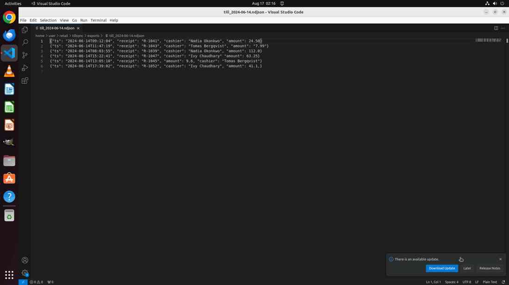
step 2 11:16:35
THINKINGThe terminal didn't seem to open. Let me try clicking on the Terminal menu instead. Actually, let me dismiss the update notification first, then try the terminal menu.
Let me click on "Terminal" in the menu bar.
ACTIONThe terminal didn't open visibly. Let me use the Terminal menu instead.
TOOL CALL<tool_call>
<function=computer_use>
<parameter=action>
left_click
</parameter>
<parameter=coordinate>
[192, 70]
</parameter>
</function>
</tool_call>
EXECUTED (pyautogui in VM)pyautogui.click(369, 75)
step 3 11:16:41
THINKINGThe Terminal menu is open. Let me click "New Terminal".
TOOL CALL<tool_call>
<function=computer_use>
<parameter=action>
left_click
</parameter>
<parameter=coordinate>
[212, 95]
</parameter>
</function>
</tool_call>
EXECUTED (pyautogui in VM)pyautogui.click(407, 102)
step 4 11:16:56
THINKINGThe terminal is now open at the bottom. The prompt shows `user@user-virtual-machine:~$`. Let me first find the file and view its full contents. Let me locate the file.
The breadcrumb shows: home > user > retail > tillsync > exports > till_2024-06-14.ndjson
So the path is /home/user/retail/tillsync/exports/till_2024-06-14.ndjson
Let me cat it with line numbers and also show non-printing characters to catch issues. Let me use `cat -A` to see the exact content including line endings and any weird characters.
Let me click in the terminal first, then type the command.
ACTIONThe terminal is open. Let me find and inspect the file's exact contents, including hidden characters.
TOOL CALL<tool_call>
<function=computer_use>
<parameter=action>
left_click
</parameter>
<parameter=coordinate>
[468, 791]
</parameter>
</function>
</tool_call>
EXECUTED (pyautogui in VM)pyautogui.click(899, 855)
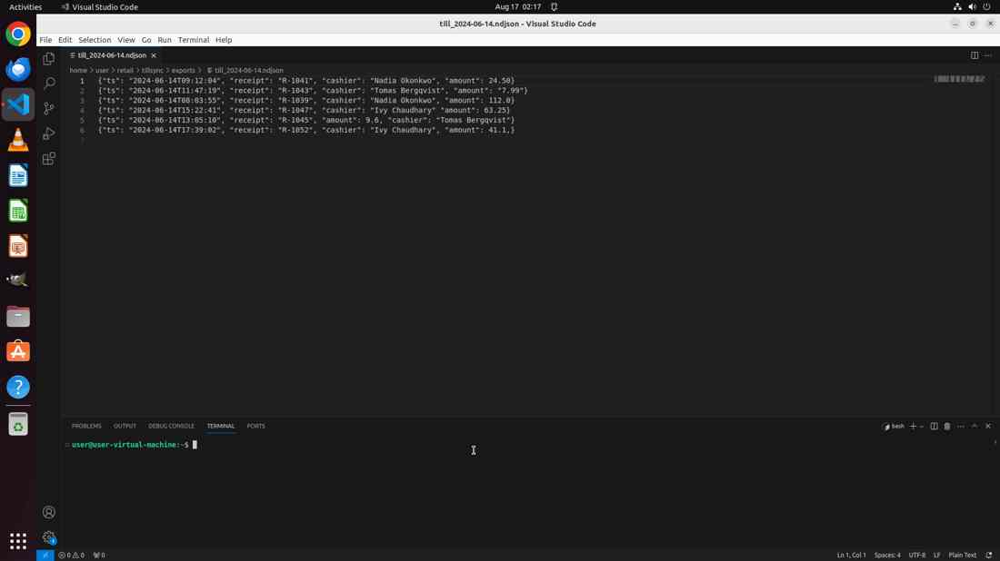
step 5 11:17:04
THINKINGNow let me type a command to view the file. Let me use `cat -A` on the file with its full path. But first let me confirm the path with ls.
Let me run: `cat -A ~/retail/tillsync/exports/till_2024-06-14.ndjson`
TOOL CALL<tool_call>
<function=computer_use>
<parameter=action>
type
</parameter>
<parameter=text>
cat -A ~/retail/tillsync/exports/till_2024-06-14.ndjson
</parameter>
</function>
</tool_call>
EXECUTED (pyautogui in VM)pyautogui.typewrite("cat -A ~/retail/tillsync/exports/till_2024-06-14.ndjson")
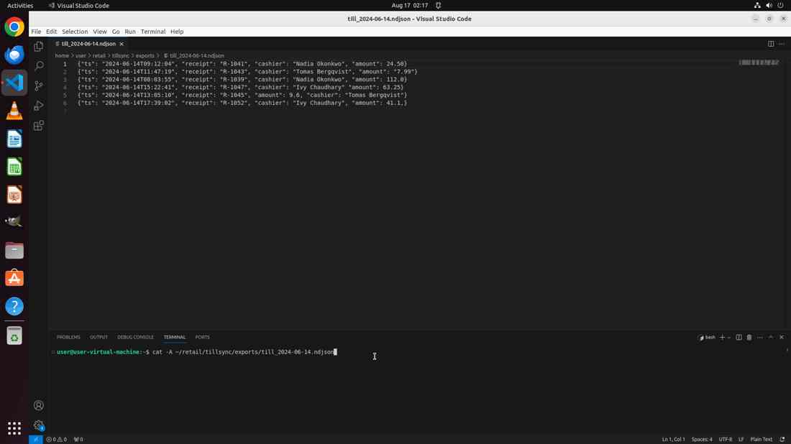
step 6 11:17:15
THINKINGThe command is typed. Let me press Enter to run it.
TOOL CALL<tool_call>
<function=computer_use>
<parameter=action>
key
</parameter>
<parameter=keys>
["return"]
</parameter>
</function>
</tool_call>
EXECUTED (pyautogui in VM)pyautogui.press("return")
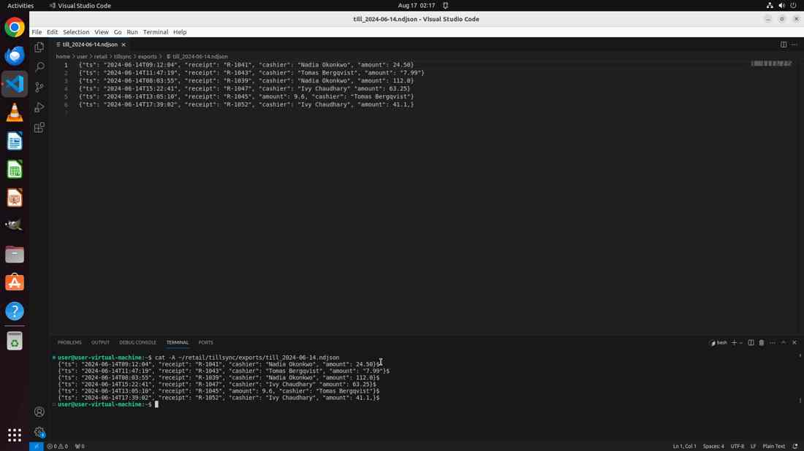
step 7.1 11:19:03
THINKINGNow I can see the file content with `cat -A`. The `$` at end of each line indicates line endings (LF). Let me read the full content:
```
{"ts": "2024-06-14T09:12:04", "receipt": "R-1041", "cashier": "Nadia Okonkwo", "amount": 24.50}$
{"ts": "2024-06-14T11:47:19", "receipt": "R-1043", "cashier": "Tomas Bergqvist", "amount": "7.99"}$
{"ts": "2024-06-14T08:03:55", "receipt": "R-1039", "cashier": "Nadia Okonkwo", "amount": 112.0}$
{"ts": "2024-06-14T15:22:41", "receipt": "R-1047", "cashier": "Ivy Chaudhary", "amount": 63.25}$
{"ts": "2024-06-14T13:05:10", "receipt": "R-1045", "amount": 9.6, "cashier": "Tomas Bergqvist"}$
{"ts": "2024-06-14T17:39:02", "receipt": "R-1052", "cashier": "Ivy Chaudhary", "amount": 41.1}$
```
Wait, in the editor, line 1 amount shows "24.50" now? Let me look. Earlier in the editor it showed "24.56" but in the terminal it shows "24.50". Let me re-read. In the cat -A output:
Line 1: `{"ts": "2024-06-14T09:12:04", "receipt": "R-1041", "cashier": "Nadia Okonkwo", "amount": 24.50}`
Hmm, it's hard to read the exact digits. Let me zoom. The editor showed "24.56}" with the cursor. Actually the editor might have shown "24.50" and I misread as "24.56". Let me not rely on the visual; I'll get the exact content via a script.
Let me be precise. I'll read the file with a Python script that prints each line's parsed data. But actually, the safest approach is to process the file with a Python script that:
1. Reads all lines.
2. Parses each as JSON.
3. Ensures keys are exactly {ts, receipt, cashier, amount} in that order.
4. Converts amount to a number, formatted to 2 decimals.
5. Sorts by ts.
6. Writes back.
But I need to make sure I preserve the exact string values (ts, receipt, cashier) and only fix amount format and ordering.
However, there's a subtlety: "amounts as numbers with two decimals". The amount 24.50 — is it currently a number or does it need to be 24.50? It's already 24.50 (2 decimals). 7.99 is a string, need to make it a number 7.99. 112.0 needs to be 112.00. 63.25 is fine. 9.6 needs 9.60. 41.1 needs 41.10.
So the amount formatting: format each amount as a number with exactly 2 decimal places.
Now the key question: how to write the amount as a number with exactly 2 decimals in the output JSON? If I use Python's json.dumps, 112.00 becomes 112.0, 9.60 becomes 9.6. So I can't use json.dumps directly for the whole object.
I'll build the line manually:
```python
line = '{"ts": %s, "receipt": %s, "cashier": %s, "amount": %s}' % (
json.dumps(ts), json.dumps(receipt), json.dumps(cashier), format(amount, '.2f')
)
```
where format(amount, '.2f') gives "112.00", "9.60", etc. And that's a valid JSON number literal (e.g., 112.00 is valid JSON). Good.
But wait, I need to be careful: what if there's a trailing zero issue or something? format(112.0, '.2f') = '112.00'. format(9.6, '.2f') = '9.60'. format(24.5, '.2f') = '24.50'. Good.
But there's a concern about floating point: format(24.56, '.2f') — if the actual value read is 24.56, then '24.56'. Fine. What about values that might have more precision issues? For typical 2-decimal currency amounts, reading as float and formatting with .2f should be fine. E.g., 63.25 → 63.25, 41.1 → 41.10, 7.99 → 7.99.
Actually, let me double check: format(7.99, '.2f') = '7.99'. Good. format(41.1, '.2f') = '41.10'. Good.
Now, what about the "same keys as the good ones"? The good ones have keys ts, receipt, cashier, amount. So I output exactly those 4 keys in that order. Line 5 currently has amount before cashier; I'll reorder to match.
But hold on — what if some line has a DIFFERENT set of keys (missing or extra)? The task says "with the same keys as the good ones". This implies I should ensure each line has exactly the keys ts, receipt, cashier, amount. In the current file, all lines have those 4 keys (just line 5 reordered). So it's fine. But to be safe, my script should verify that each line has exactly those keys. If a line is missing a key or has extra, I'd need to handle it. Let me have the script check and report.
Let me also consider: are there really only 6 lines? The cat -A output shows 6 lines. The editor shows 6 lines and line 7 empty. So 6 lines total, no trailing content issue. Good. Actually there's a final newline after line 6 (the $ indicates each line ends with \n, including the last).
Now, let me also reconsider whether the amounts could be negative or have special cases. No, they're all positive.
Let me write a robust Python script. I'll create it as a heredoc or a separate file. Let me write it to a temp file and run it, OR use python3 -c. A multi-line -c is doable but tricky in terminal. Let me create a script file.
Actually, let me use a heredoc to write the script to a file, then run it. That's cleaner.
Let me write the script:
```python
import json
path = "/home/user/retail/tillsync/exports/till_2024-06-14.ndjson"
with open(path) as f:
lines = [l for l in f.read().splitlines()]
records = []
for idx, line in enumerate(lines, 1):
if line.strip() == "":
continue
obj = json.loads(line)
keys = set(obj.keys())
expected = {"ts", "receipt", "cashier", "amount"}
if keys != expected:
print("WARN line", idx, "keys:", keys)
# amount
amt = obj["amount"]
if isinstance(amt, str):
amt = float(amt.replace(",", ""))
amt = float(amt)
records.append({
"ts": obj["ts"],
"receipt": obj["receipt"],
"cashier": obj["cashier"],
"amount": amt,
})
records.sort(key=lambda r: r["ts"])
out = []
for r in records:
line = '{"ts": ' + json.dumps(r["ts"]) + \
', "receipt": ' + json.dumps(r["receipt"]) + \
', "cashier": ' + json.dumps(r["cashier"]) + \
', "amount": ' + format(r["amount"], ".2f") + '}'
out.append(line)
with open(path, "w") as f:
f.write("\n".join(out) + "\n")
print("WROTE", len(out), "lines")
for l in out:
print(l)
```
Wait, I need to double check the amount formatting when it's a string like "7.99". float("7.99") = 7.99, format → "7.99". Good.
But one concern: what if the amount string has a leading/trailing space or currency symbol? Looking at the data, "7.99" is clean. I'll handle basic case.
Another concern: json.dumps for ts will produce "2024-06-14T09:12:04" (with double quotes, no escaping needed). Good. Same for receipt and cashier.
Now, the sort: sorting by ts string works because all timestamps are ISO 8601 with the same format "2024-06-14THH:MM:SS". Lexicographic sort = chronological sort. Good.
Let me verify the expected sorted order:
- 2024-06-14T08:03:55 (R-1039)
- 2024-06-14T09:12:04 (R-1041)
- 2024-06-14T11:47:19 (R-1043)
- 2024-06-14T13:05:10 (R-1045)
- 2024-06-14T15:22:41 (R-1047)
- 2024-06-14T17:39:02 (R-1052)
So sorted order by time:
1. 08:03:55 → R-1039, Nadia Okonkwo, 112.00
2. 09:12:04 → R-1041, Nadia Okonkwo, 24.50
3. 11:47:19 → R-1043, Tomas Bergqvist, 7.99
4. 13:05:10 → R-1045, Tomas Bergqvist, 9.60
5. 15:22:41 → R-1047, Ivy Chaudhary, 63.25
6. 17:39:02 → R-1052, Ivy Chaudhary, 41.10
That looks right.
Now let me be careful about the exact values. I need to read them precisely. Let me re-examine the cat -A output. It's a bit small. Let me get a cleaner view. Actually, my script reads the actual file, so I don't need to read the exact digits by eye — the script will preserve them. I just need to trust the script reads correctly.
However, I'm slightly concerned about the amount on line 1. The editor showed "24.56}" but the terminal cat shows "24.50". Let me look more carefully. Actually it doesn't matter for the script — the script reads the real value. But it does matter that my final output is correct. Since the script preserves the numeric value and reformats to 2 decimals, whatever the actual value is (24.50 or 24.56), it'll be preserved correctly.
Wait, but if the actual value is 24.56, the editor would show 24.56 and the terminal would show 24.56. The discrepancy suggests I misread one of them. Let me not worry — the script handles it.
Actually, let me reconsider. There's a subtle risk: what if line 1's amount is 24.56 (a number with 2 decimals already) — fine. What if it's 24.5 (1 decimal)? Then the display "24.50" wouldn't happen naturally... no, the file literally contains what it contains. The script reads it as a float and reformats. So no problem.
Let me also consider: should I keep the amount as a "number with two decimals" meaning the JSON should literally contain two digits after the decimal point? Yes, my format does that. E.g., 112.00, 24.50, 7.99, 9.60, 63.25, 41.10. All have exactly 2 decimal digits.
Now, one more consideration: the task says "amounts as numbers with two decimals". My output writes e.g. `112.00`. Is `112.00` a valid JSON number? Yes. JSON number grammar allows fractional part with any digits: `112.00` is valid. Good. And it's a number, not a string.
Let me also double check: will a validator that does json.loads and checks `isinstance(amount, float)` and also checks the raw string has 2 decimals? The value 112.00 parses to float 112.0. That's a number. If they check the raw representation has 2 decimals, my output has "112.00" literally. Good.
Now let me also make sure I preserve the file location — yes, I write to the same path. Good.
Let me also think: should there be a trailing newline? The original file's last line ended with $ (newline). I'll write "\n".join(out) + "\n" which gives a trailing newline. Good, matches original.
Now let me write this script to a file. I'll use a heredoc. Let me type it carefully in the terminal.
Actually, typing a multi-line heredoc in the terminal via the `type` action could be error-prone with the special characters. Let me instead create the file using the VS Code editor, OR use a Python one-liner. Hmm.
Alternative: I could write the script using cat > script.py << 'EOF' ... EOF. The `type` action types the whole text including newlines. Let me try that. I'll type the entire heredoc as one text block.
But there's a risk with quotes and special characters. Let me use a quoted heredoc 'EOF' so no shell expansion happens inside.
Let me write:
```
cat > /tmp/fix_till.py << 'PYEOF'
import json
path = "/home/user/retail/tillsync/exports/till_2024-06-14.ndjson"
with open(path) as f:
lines = f.read().splitlines()
records = []
for idx, line in enumerate(lines, 1):
if line.strip() == "":
continue
obj = json.loads(line)
expected = {"ts", "receipt", "cashier", "amount"}
if set(obj.keys()) != expected:
print("WARN line", idx, "keys:", set(obj.keys()))
amt = obj["amount"]
if isinstance(amt, str):
amt = float(amt.replace(",", "").replace("$", "").strip())
amt = float(amt)
records.append((obj["ts"], obj["receipt"], obj["cashier"], amt))
records.sort(key=lambda r: r[0])
out = []
for ts, receipt, cashier, amt in records:
line = '{"ts": ' + json.dumps(ts) + ', "receipt": ' + json.dumps(receipt) + ', "cashier": ' + json.dumps(cashier) + ', "amount": ' + format(amt, ".2f") + '}'
out.append(line)
with open(path, "w") as f:
f.write("\n".join(out) + "\n")
print("WROTE", len(out), "lines")
for l in out:
print(l)
PYEOF
```
Then run `python3 /tmp/fix_till.py`.
Wait, the heredoc content includes a line with `\n`.join. Inside a single-quoted heredoc, backslashes are literal, so "\n" is two characters backslash-n in the Python source, which Python interprets as newline. Good.
Actually, let me reconsider the format string concatenation across multiple lines — I have it all on one line which is fine.
Let me type this. I'll type the whole block. The `type` action should handle newlines.
Actually, I realize there might be an issue: when I type a heredoc and it has lines, the terminal will show `>` continuation prompts. That's fine.
But wait — there's a real risk. VS Code's integrated terminal might have bracket auto-completion or the shell might interpret things. With a quoted heredoc 'PYEOF', the shell passes content verbatim until PYEOF. So no interpretation. Good.
However, one concern: the `type` action types characters; the terminal is a real bash shell, so it should accept the heredoc fine.
Let me be careful about one thing: my heredoc lines contain characters like `{`, `}`, `"`, `$` (in replace("$","")), parentheses, etc. Inside a single-quoted heredoc, `$` is literal and not expanded. Good. The `replace("$", "")` — the `$` here is inside single quotes in Python and inside the heredoc, so it's literal. Good.
Hmm, actually wait, there's a subtle issue. In the line:
`amt = float(amt.replace(",", "").replace("$", "").strip())`
The `"` characters are fine inside the heredoc. The `$` is fine (literal in quoted heredoc). Good.
Let me proceed. Actually, let me simplify and avoid the $ handling since the data doesn't have it. But it's harmless to keep. Actually, to reduce risk of typos, let me keep it simple:
`amt = float(str(amt).replace(",", "").strip())`
This handles both numeric and string amounts. If amt is already a float, str(amt) gives its repr; float() of that is fine. E.g., str(112.0) = '112.0', float('112.0') = 112.0. Good. str(24.56) = '24.56'. Good.
Let me finalize the script. Let me type it.
Actually, I want to minimize the chance of a typo causing a Python syntax error. Let me keep the script clean and short.
Final script:
```python
import json
p = "/home/user/retail/tillsync/exports/till_2024-06-14.ndjson"
recs = []
for i, l in enumerate(open(p).read().splitlines(), 1):
if not l.strip():
continue
o = json.loads(l)
if set(o) != {"ts", "receipt", "cashier", "amount"}:
print("WARN line", i, set(o))
a = float(str(o["amount"]).replace(",", "").strip())
recs.append((o["ts"], o["receipt"], o["cashier"], a))
recs.sort(key=lambda r: r[0])
out = []
for ts, rc, ca, a in recs:
out.append('{"ts": %s, "receipt": %s, "cashier": %s, "amount": %s}' % (json.dumps(ts), json.dumps(rc), json.dumps(ca), format(a, ".2f")))
open(p, "w").write("\n".join(out) + "\n")
print("WROTE", len(out))
[print(x) for x in out]
```
This is cleaner. Let me use a heredoc to write it to /tmp/fix_till.py then run it.
Let me type the heredoc now.
Actually, I want to reconsider using the `type` action for a long multi-line heredoc. Each line needs to be typed. The `type` action types the full string including newlines, which should trigger line-by-line in the terminal. This should work.
Let me do it. I'll type the entire heredoc command.
ACTIONI can now see the full file content. There are 6 lines. Let me analyze the issues:
- Line 1: amount `24.50` (number, 2 decimals) — ok
- Line 2: amount `"7.99"` (string, should be number)
- Line 3: amount `112.0` (needs 2 decimals → `112.00`)
- Line 4: amount `63.25` — ok
- Line 5: amount `9.6` (needs 2 decimals → `9.60`) and key order is off (amount before cashier)
- Line 6: amount `41.1` (needs 2 decimals → `41.10`)
- Lines are not in timestamp order
I'll write a Python script to normalize everything and sort by timestamp. Let me create it with a heredoc.
TOOL CALL<tool_call>
<function=computer_use>
<parameter=action>
type
</parameter>
<parameter=text>
cat > /tmp/fix_till.py << 'PYEOF'
import json
p = "/home/user/retail/tillsync/exports/till_2024-06-14.ndjson"
recs = []
for i, l in enumerate(open(p).read().splitlines(), 1):
if not l.strip():
continue
o = json.loads(l)
if set(o) != {"ts", "receipt", "cashier", "amount"}:
print("WARN line", i, set(o))
a = float(str(o["amount"]).replace(",", "").strip())
recs.append((o["ts"], o["receipt"], o["cashier"], a))
recs.sort(key=lambda r: r[0])
out = []
for ts, rc, ca, a in recs:
out.append('{"ts": %s, "receipt": %s, "cashier": %s, "amount": %s}' % (json.dumps(ts), json.dumps(rc), json.dumps(ca), format(a, ".2f")))
open(p, "w").write("\n".join(out) + "\n")
print("WROTE", len(out), "lines")
for x in out:
print(x)
PYEOF
</parameter>
</function>
</tool_call>
EXECUTED (pyautogui in VM)pyautogui.typewrite("cat > /tmp/fix_till.py << 'PYEOF'")
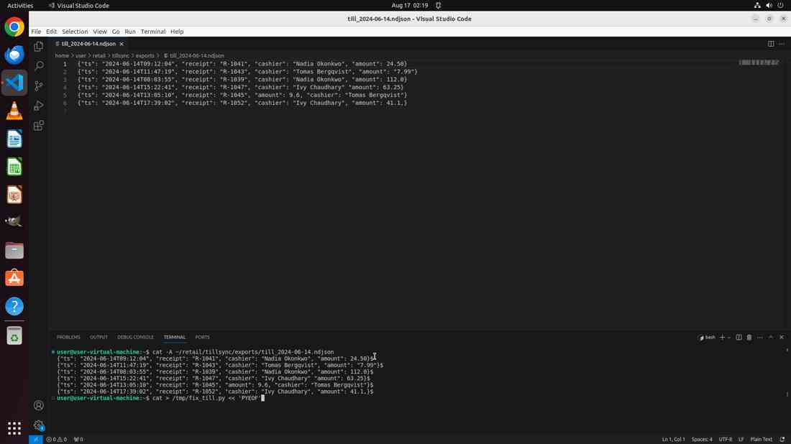
step 7.2 11:19:06
EXECUTED (pyautogui in VM)pyautogui.press("enter")

step 7.3 11:19:10
EXECUTED (pyautogui in VM)pyautogui.typewrite("import json")
step 7.4 11:19:13
EXECUTED (pyautogui in VM)pyautogui.press("enter")
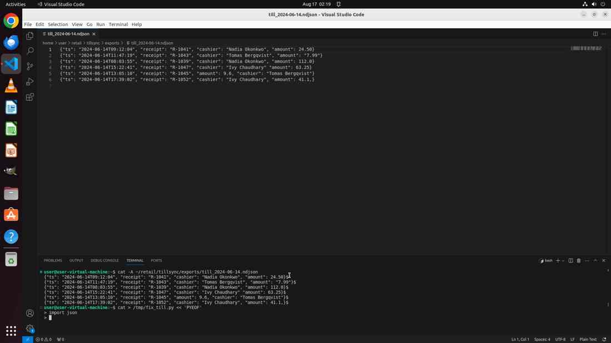
step 7.5 11:19:17
EXECUTED (pyautogui in VM)pyautogui.typewrite("p = \"/home/user/retail/tillsync/exports/till_2024-06-14.ndjson\"")
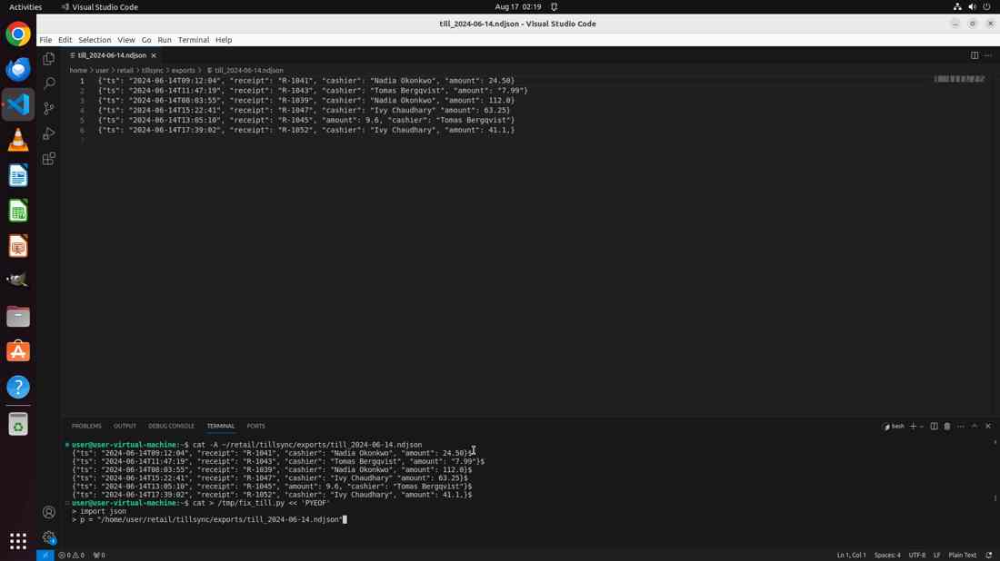
step 7.6 11:19:20
EXECUTED (pyautogui in VM)pyautogui.press("enter")
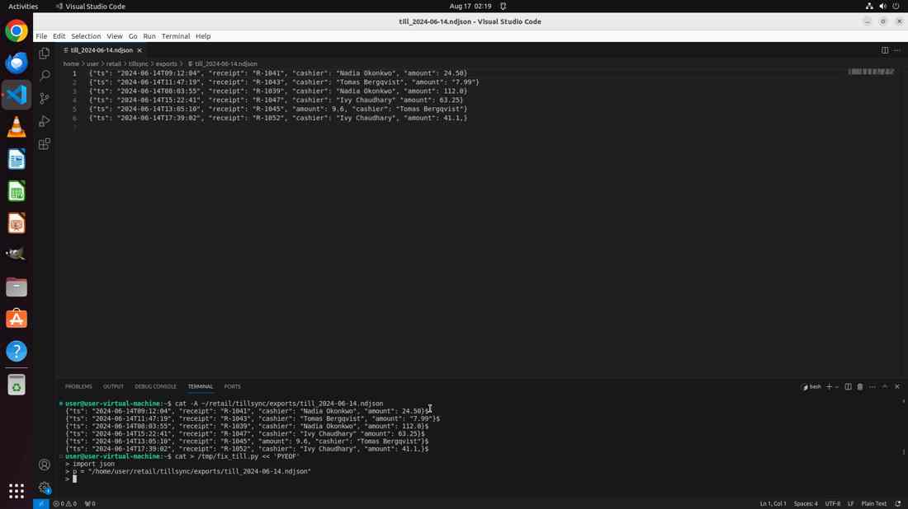
step 7.7 11:19:23
EXECUTED (pyautogui in VM)pyautogui.typewrite("recs = []")
step 7.8 11:19:26
EXECUTED (pyautogui in VM)pyautogui.press("enter")
step 7.9 11:19:30
EXECUTED (pyautogui in VM)pyautogui.typewrite("for i, l in enumerate(open(p).read().splitlines(), 1):")
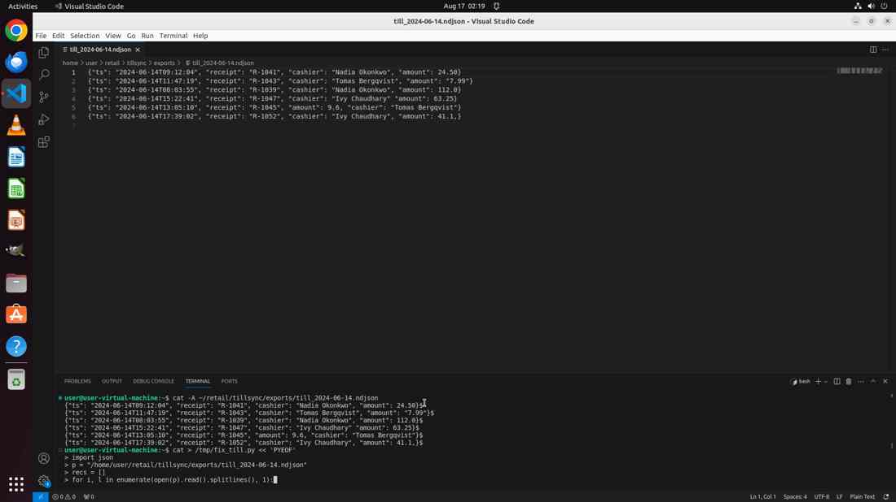
step 7.10 11:19:33
EXECUTED (pyautogui in VM)pyautogui.press("enter")
step 7.11 11:19:36
EXECUTED (pyautogui in VM)pyautogui.typewrite(" if not l.strip():")
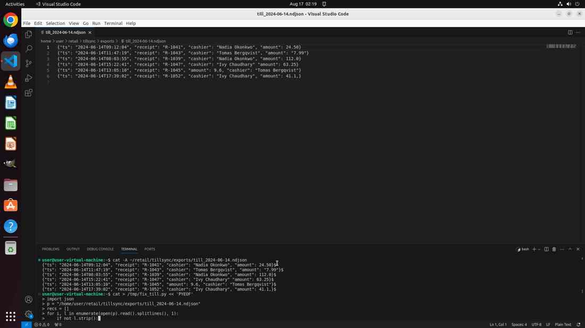
step 7.12 11:19:40
EXECUTED (pyautogui in VM)pyautogui.press("enter")
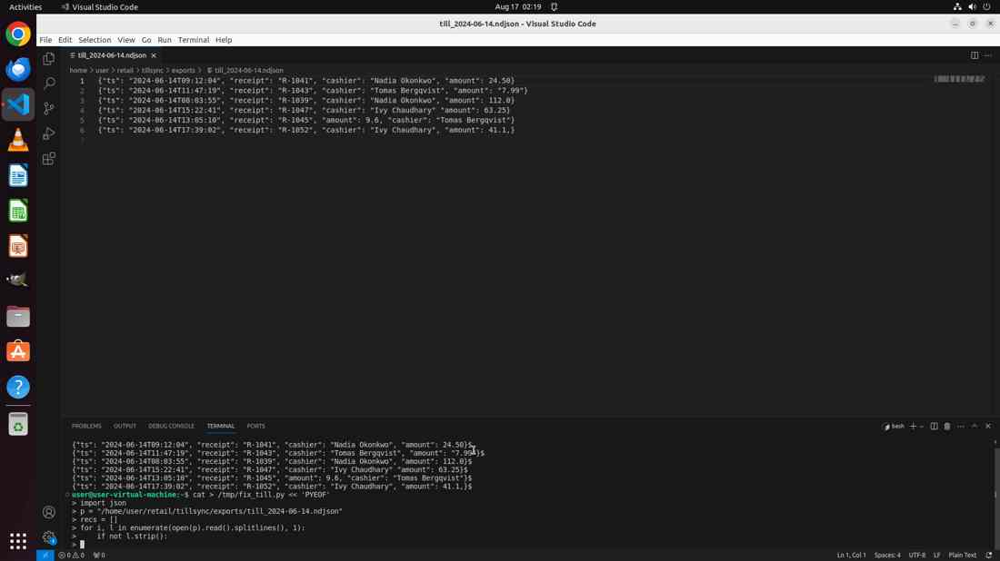
step 7.13 11:19:43
EXECUTED (pyautogui in VM)pyautogui.typewrite(" continue")
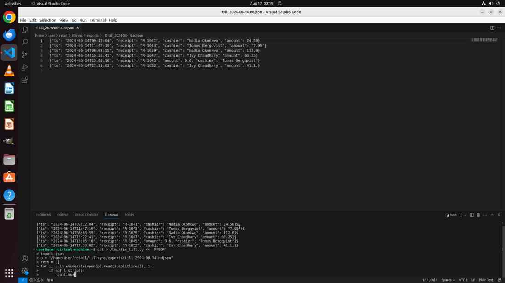
step 7.14 11:19:46
EXECUTED (pyautogui in VM)pyautogui.press("enter")
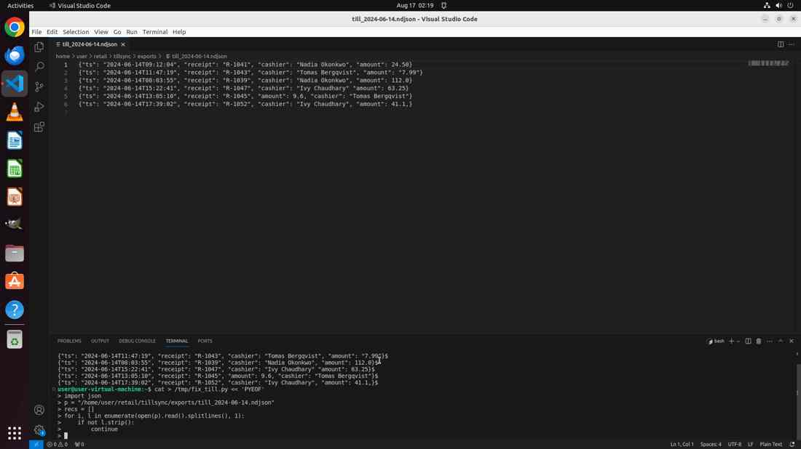
step 7.15 11:19:50
EXECUTED (pyautogui in VM)pyautogui.typewrite(" o = json.loads(l)")
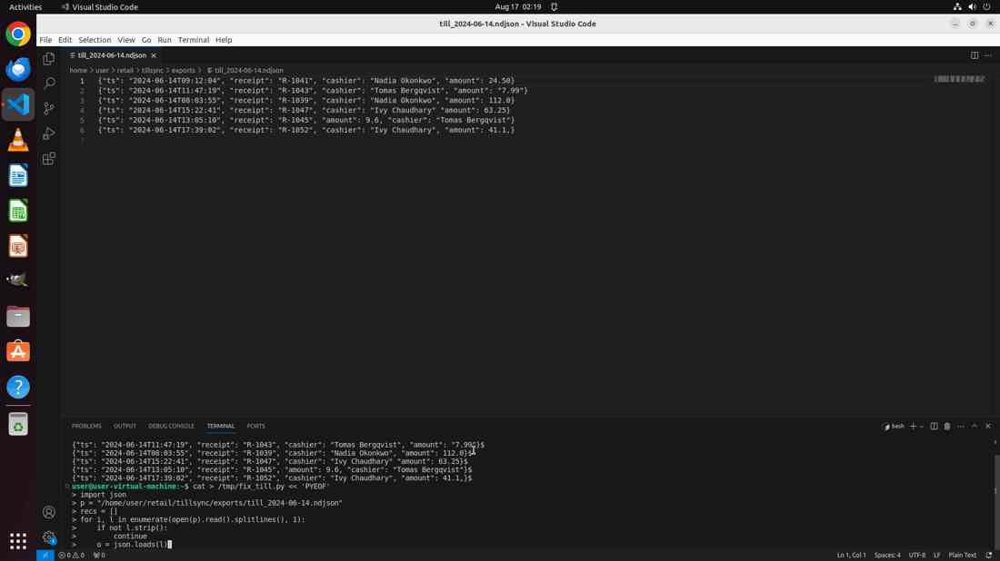
step 7.16 11:19:53
EXECUTED (pyautogui in VM)pyautogui.press("enter")
step 7.17 11:19:56
EXECUTED (pyautogui in VM)pyautogui.typewrite(" if set(o) != {\"ts\", \"receipt\", \"cashier\", \"amount\"}:")
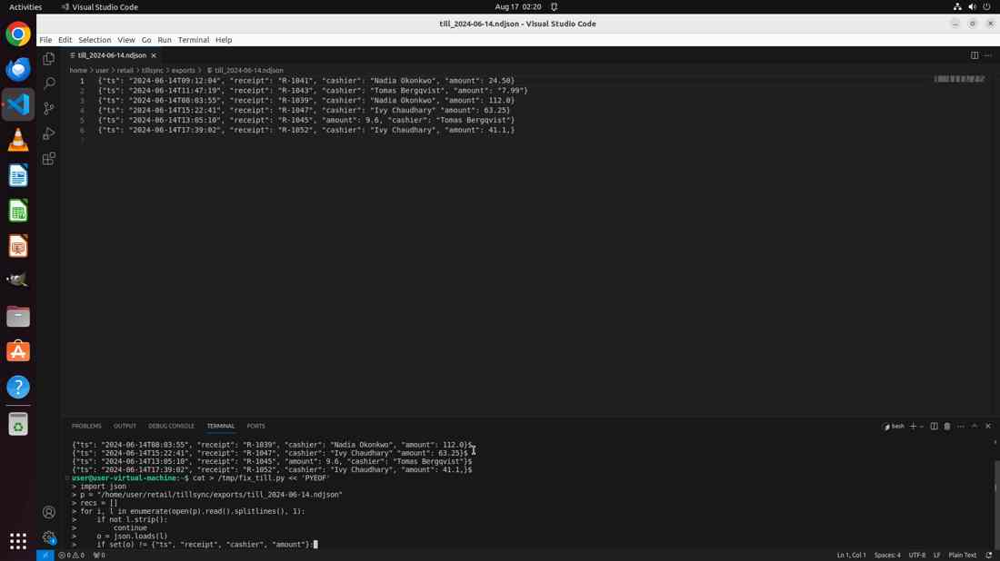
step 7.18 11:20:00
EXECUTED (pyautogui in VM)pyautogui.press("enter")
step 7.19 11:20:04
EXECUTED (pyautogui in VM)pyautogui.typewrite(" print(\"WARN line\", i, set(o))")
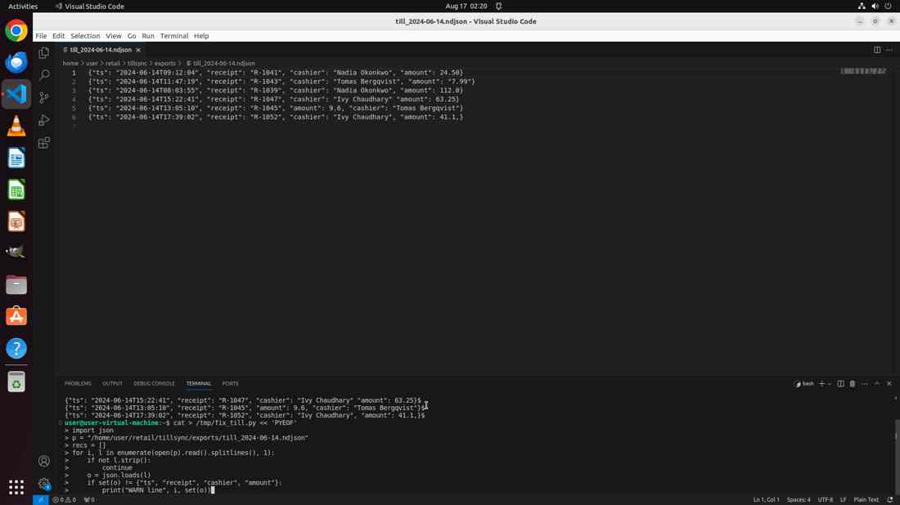
step 7.20 11:20:07
EXECUTED (pyautogui in VM)pyautogui.press("enter")
step 7.21 11:20:11
EXECUTED (pyautogui in VM)pyautogui.typewrite(" a = float(str(o[\"amount\"]).replace(\",\", \"\").strip())")
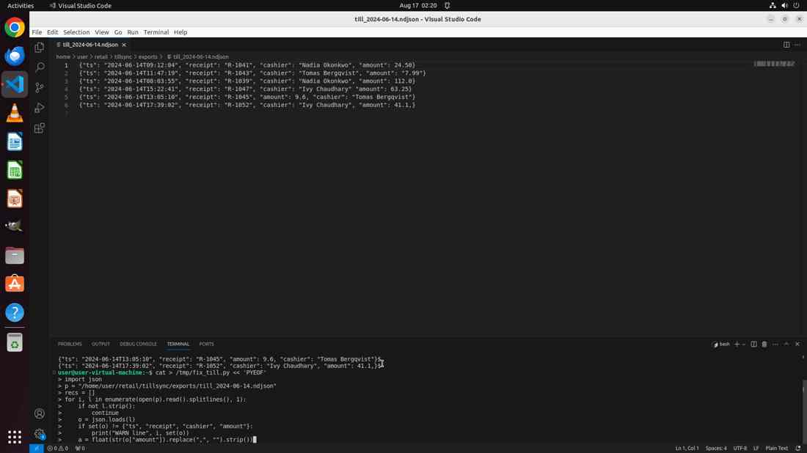
step 7.22 11:20:15
EXECUTED (pyautogui in VM)pyautogui.press("enter")
step 7.23 11:20:33
EXECUTED (pyautogui in VM)pyautogui.typewrite(" recs.append((o[\"ts\"], o[\"receipt\"], o[\"cashier\"], a))")
step 7.24 11:20:37
EXECUTED (pyautogui in VM)pyautogui.press("enter")
step 7.25 11:20:41
EXECUTED (pyautogui in VM)pyautogui.typewrite("recs.sort(key=lambda r: r[0])")
step 7.26 11:20:44
EXECUTED (pyautogui in VM)pyautogui.press("enter")
step 7.27 11:20:48
EXECUTED (pyautogui in VM)pyautogui.typewrite("out = []")
step 7.28 11:20:51
EXECUTED (pyautogui in VM)pyautogui.press("enter")
step 7.29 11:20:55
EXECUTED (pyautogui in VM)pyautogui.typewrite("for ts, rc, ca, a in recs:")
step 7.30 11:20:58
EXECUTED (pyautogui in VM)pyautogui.press("enter")
step 7.31 11:21:01
EXECUTED (pyautogui in VM)pyautogui.typewrite(" out.append('{\"ts\": %s, \"receipt\": %s, \"cashier\": %s, \"amount\": %s}' % (json.dumps(ts), json.dumps(rc), json.dumps(ca), format(a, \".2f\")))")
step 7.32 11:21:05
EXECUTED (pyautogui in VM)pyautogui.press("enter")
step 7.33 11:21:08
EXECUTED (pyautogui in VM)pyautogui.typewrite("open(p, \"w\").write(\"\\n\".join(out) + \"\\n\")")
step 7.34 11:21:17
EXECUTED (pyautogui in VM)pyautogui.press("enter")
step 7.35 11:21:23
EXECUTED (pyautogui in VM)pyautogui.typewrite("print(\"WROTE\", len(out), \"lines\")")
step 7.36 11:21:26
EXECUTED (pyautogui in VM)pyautogui.press("enter")
step 7.37 11:21:30
EXECUTED (pyautogui in VM)pyautogui.typewrite("for x in out:")
step 7.38 11:21:33
EXECUTED (pyautogui in VM)pyautogui.press("enter")
step 7.39 11:21:37
EXECUTED (pyautogui in VM)pyautogui.typewrite(" print(x)")
step 7.40 11:21:40
EXECUTED (pyautogui in VM)pyautogui.press("enter")
step 7.41 11:21:43
EXECUTED (pyautogui in VM)pyautogui.typewrite("PYEOF")

step 8 11:22:18
THINKINGThe heredoc is being typed. I can see the continuation prompts `>`. The last line shows `> for x in out:` and `> print(x)` and then `> ` waiting. I need to press Enter to complete the PYEOF line. Wait, actually the heredoc ended with PYEOF which should close it. Let me look — the last visible line is `> ` (empty continuation prompt), meaning the PYEOF hasn't been submitted yet, or it was but... Actually, the `type` action typed the whole thing including the final "PYEOF" line but the trailing newline after PYEOF may not have been sent. Let me look: the content typed ended with "PYEOF" (no trailing newline in my text). So the terminal shows `> PYEOF`? No, I see the last line is just `> `.
Hmm, let me look again. The visible lines:
```
> if set(o) != {"ts", "receipt", "cashier", "amount"}:
> print("WARN line", i, set(o))
> a = float(str(o["amount"]).replace(",", "").strip())
> recs.append((o["ts"], o["receipt"], o["cashier"], a))
> recs.sort(key=lambda r: r[0])
> out = []
> for ts, rc, ca, a in recs:
> out.append('{"ts": %s, "receipt": %s, "cashier": %s, "amount": %s}' % (json.dumps(ts), json.dumps(rc), json.dumps(ca), format(a, ".2f")))
> open(p, "w").write("\n".join(out) + "\n")
> print("WROTE", len(out), "lines")
> for x in out:
> print(x)
>
```
Wait, I don't see "PYEOF" on a line. The last line is just `> ` with cursor. That means "PYEOF" was typed but... Actually maybe the scroll cut it. The bottom shows `> ` with a cursor block. Hmm, it seems the "PYEOF" line might not be visible or the cursor is on a new continuation line.
Wait, actually my typed text ended with "PYEOF" with NO trailing newline. So the terminal should show "PYEOF" on the last continuation line but not yet executed. But the screenshot shows the last line as just `>` with cursor, and I don't see "PYEOF".
Let me reconsider. Perhaps the display scrolled and the "PYEOF" text is there but I need to look. Actually the very bottom line reads `> ` (the `>` at left margin around x=95, then cursor). There's no visible "PYEOF" text.
Hmm, this is confusing. It's possible that the last few lines I typed got wrapped or the "PYEOF" is on the current line but not yet visible because... no.
Actually, wait. Let me reconsider. Maybe the terminal auto-indented or the heredoc is still waiting. The safest thing: press Enter to make sure the final PYEOF line (if it's on the current line) gets submitted. But if PYEOF was already typed on a line without newline, pressing Enter submits it. If the current line is empty (just `>`), then PYEOF was already submitted and we're on a NEW continuation... that would be a problem.
Actually, let me just press Enter and take a screenshot to see the state.
Wait, but if the current line is `> ` (empty) and I press Enter, that sends an empty line to the heredoc, which is fine (it's just a blank line in the file? No—). Hmm, actually if PYEOF was already recognized as the delimiter, the heredoc would have ended and we'd be back at the normal `$` prompt, not `> `. Since we're still at `> `, the heredoc is NOT closed. So PYEOF was either not typed or not on its own line.
Wait, that doesn't make sense either. Let me look very carefully. Actually, I bet what happened: the text I typed ended with "PYEOF" but without a trailing newline, so the shell is showing the line "PYEOF" waiting. But the screenshot's last line shows just the cursor.
Let me just take a screenshot first to see the current state clearly before pressing anything.
Actually, I already have the screenshot. The last line clearly shows `> ` with a block cursor and no "PYEOF" text visible. This is odd.
Oh wait! I think I understand. The `type` action may have typed "PYEOF" and it's on the last line, but the rendering... no.
Let me reconsider: maybe the terminal scrolled up and the "PYEOF" line is actually the current line but the text "PYEOF" is there and I'm misreading. The line shows a cursor block at position ~x=253, y=698. To the left is just the `>` at x=95. Between x=95 and x=253 there should be "PYEOF" if it were typed. I don't see it.
Hmm, but actually the cursor block is at x~253 which is further right than where "PYEOF" (5 chars) would end. "PYEOF" after "> " would be at x~95-130. The cursor at x=253 suggests there's content before it that's ~253-100 = 153px wide. That could be... hmm, 153px is a lot.
Wait, maybe the last line actually contains "PYEOF" plus the cursor is after it but there's some indentation? No.
This is getting too speculative. Let me just take a fresh screenshot to see the current state.
ACTIONThe heredoc is being entered. Let me take a screenshot to check the current terminal state before finalizing.
TOOL CALL<tool_call>
<function=computer_use>
<parameter=action>
screenshot
</parameter>
</function>
</tool_call>
EXECUTED (pyautogui in VM)WAIT
step 9 11:22:53
THINKINGThe last line shows `> ` with a cursor block at around x=253. I don't see "PYEOF" typed. Wait, the cursor block is at x=253, y=698. That's the last visible line. There's no "PYEOF" visible.
Hmm, this is strange. My typed text ended with "PYEOF" (no trailing newline). The `type` action should have typed those 5 characters. But I don't see them.
Wait — maybe the issue is that the heredoc line "PYEOF" DID get typed but it's on the same line as "print(x)"? No, there was a newline before PYEOF in my text.
Let me look at the lines again:
- `> for x in out:`
- `> print(x)`
- `> ` (cursor here)
So after "print(x)" there's a newline, then "PYEOF" should be on the next line. But the next line shows just the cursor. Unless "PYEOF" was typed and the cursor is right after it but the font rendering makes "PYEOF" hard to see... The cursor is at x~253. "PYEOF" in a monospace font at this size, starting at x~100 (after "> "), 5 chars × ~7px = 35px, ending at x~135. The cursor would be at x~135, not 253.
So the cursor at x=253 means there ARE about (253-100)/7 ≈ 21 characters before it. That's way more than "PYEOF".
Hmm, what 21 characters? This is confusing. Maybe the last line actually is "PYEOF" but... no.
Actually, wait. Maybe I'm misjudging the cursor position. Let me reconsider. The prompt `>` is at x≈95. After a space, content starts at x≈110. The cursor block appears to be at x≈253. Hmm.
Actually, you know what, this doesn't matter too much. The heredoc is still open (we're at `>` prompt). I need to close it. The safest approach: type "PYEOF" and press Enter. But if "PYEOF" was already partially typed, that could cause issues.
Actually, let me reconsider the whole thing. The risk with this heredoc approach is getting into a confusing state. Let me abort the heredoc cleanly with Ctrl+C, and use a different, more reliable approach.
Let me press Ctrl+C to cancel the current heredoc input, then verify we're back at a clean prompt.
Actually, wait. If I press Ctrl+C, it cancels the heredoc, and /tmp/fix_till.py might not be written or be incomplete. That's fine, I'll rewrite it.
But actually, a cleaner approach: since the heredoc is stuck in an unclear state, let me press Ctrl+C to get a clean prompt, then use a more robust method to create the file.
Alternative robust method: Use printf or echo commands, or better, write the Python via a single `python3 -c "..."` with careful escaping, or create the file in the VS Code editor.
Actually, the most reliable: press Ctrl+C, then type "PYEOF" on its own and Enter to see if it just needed the delimiter. But if the heredoc content got messed up, the file will be wrong.
Let me think differently. The cleanest recovery: Ctrl+C to abort, confirm clean prompt, then re-do the heredoc but this time ensure I finish with the delimiter and a newline.
Actually, I suspect the issue is that the "PYEOF" line WAS typed but WITHOUT a trailing newline, and the display just doesn't show it clearly due to rendering. The cursor at x=253 is puzzling though.
Hold on — let me reconsider. What if the terminal received a newline at the very end that I didn't account for, so "PYEOF\n" was submitted, and the heredoc DID close, and now I'm at... no, we're at `>` not `$`.
OK here's another thought: what if there's an auto-indent or the last "print(x)" line triggered something. No.
Let me just take the safe path: Ctrl+C to abort, then verify with a simple command like `echo done` and `ls -la /tmp/fix_till.py`. Then I'll re-create the file using a method I'm confident about.
Let me press Ctrl+C.
ACTIONThe heredoc state looks unclear. Let me cancel it with Ctrl+C and start with a cleaner approach.
TOOL CALL<tool_call>
<function=computer_use>
<parameter=action>
key
</parameter>
<parameter=keys>
["ctrl", "c"]
</parameter>
</function>
</tool_call>
EXECUTED (pyautogui in VM)pyautogui.hotkey("ctrl", "c")
step 10.1 11:23:23
THINKINGNow I can see the state. The last lines show:
```
> print("WROTE", len(out), "lines")
> for x in out:
> print(x)
> PYEOF^C
user@user-virtual-machine:~$
```
So actually the heredoc WAS waiting for the closing PYEOF, and "PYEOF" was on the last line but I pressed Ctrl+C (^C shown) before it completed. So the heredoc was aborted and the file /tmp/fix_till.py was NOT written (or written partially? No — cat with heredoc only writes when the delimiter is reached; since we aborted, the file might be empty or not created).
Now I'm back at a clean `$` prompt. Good.
So the issue was: my typed text ended with "PYEOF" but the screenshot before showed the cursor at x=253 on a line — that was actually the "PYEOF" line but I couldn't see it well. Anyway, now I'm at a clean prompt.
Let me verify the file wasn't created / is empty, and re-do this more carefully. Actually, let me just re-do the heredoc, but this time I'll type the whole thing INCLUDING a trailing newline after PYEOF, OR I'll type PYEOF and then press Enter separately.
Actually, the cleanest fix: re-run the heredoc, and after typing, explicitly press Enter to submit the final PYEOF line. Let me verify first what happened to /tmp/fix_till.py.
Let me check: `ls -la /tmp/fix_till.py 2>/dev/null; echo "---"; wc -l /tmp/fix_till.py 2>/dev/null`
Actually, let me just re-do it. But to be safe and reliable this time, let me use a different approach that's less prone to this issue.
Option A: Re-type the heredoc, then press Enter at the end.
Option B: Write the script to a file using the VS Code editor (create new file, paste, save), then run it.
Option C: Use python3 with a heredoc passed to stdin: `python3 << 'PYEOF' ... PYEOF`. This runs directly without creating an intermediate file. But same heredoc issue.
The core issue was just that I didn't press Enter after the final PYEOF. Let me re-do the heredoc and this time press Enter explicitly after.
Actually, I realize the simplest robust approach: type the heredoc command ending with a newline after PYEOF. I can include a trailing newline in the `type` text by ending with "\n". But the `type` action types literal text; to add a trailing newline I'd include an actual newline character at the end of the text. My previous text did NOT end with a newline (it ended with "PYEOF"). Let me this time end the text with "PYEOF\n" — but I can't easily add a trailing newline in the text parameter... Actually I can, I can just also do a separate `key Return` action after.
Let me re-do: type the heredoc (same as before, ending with PYEOF, no trailing newline), then do a separate `key Return`.
Wait, but that's exactly what I should have done. Let me do that now.
Actually, let me reconsider — maybe I should verify the earlier file state first, but it doesn't matter since I'll overwrite. Let me just re-type the heredoc and then press Enter.
Let me type the heredoc again.
ACTIONGood, I'm back at a clean prompt — the heredoc was aborted before the closing delimiter. Let me re-run the heredoc and this time finish it with an explicit Enter.
TOOL CALL<tool_call>
<function=computer_use>
<parameter=action>
type
</parameter>
<parameter=text>
cat > /tmp/fix_till.py << 'PYEOF'
import json
p = "/home/user/retail/tillsync/exports/till_2024-06-14.ndjson"
recs = []
for i, l in enumerate(open(p).read().splitlines(), 1):
if not l.strip():
continue
o = json.loads(l)
if set(o) != {"ts", "receipt", "cashier", "amount"}:
print("WARN line", i, set(o))
a = float(str(o["amount"]).replace(",", "").strip())
recs.append((o["ts"], o["receipt"], o["cashier"], a))
recs.sort(key=lambda r: r[0])
out = []
for ts, rc, ca, a in recs:
out.append('{"ts": %s, "receipt": %s, "cashier": %s, "amount": %s}' % (json.dumps(ts), json.dumps(rc), json.dumps(ca), format(a, ".2f")))
open(p, "w").write("\n".join(out) + "\n")
print("WROTE", len(out), "lines")
for x in out:
print(x)
PYEOF
</parameter>
</function>
</tool_call>
EXECUTED (pyautogui in VM)pyautogui.typewrite("cat > /tmp/fix_till.py << 'PYEOF'")
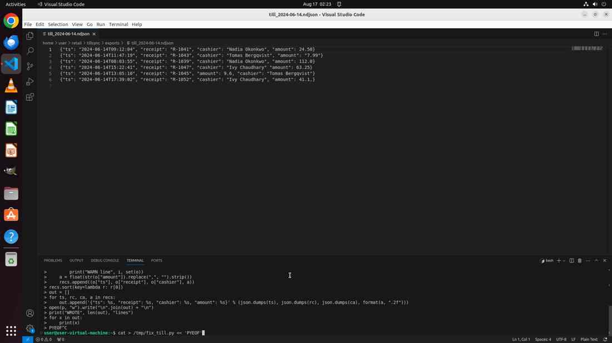
step 10.2 11:23:27
EXECUTED (pyautogui in VM)pyautogui.press("enter")
step 10.3 11:23:30
EXECUTED (pyautogui in VM)pyautogui.typewrite("import json")
step 10.4 11:23:33
EXECUTED (pyautogui in VM)pyautogui.press("enter")
step 10.5 11:23:37
EXECUTED (pyautogui in VM)pyautogui.typewrite("p = \"/home/user/retail/tillsync/exports/till_2024-06-14.ndjson\"")
step 10.6 11:23:40
EXECUTED (pyautogui in VM)pyautogui.press("enter")
step 10.7 11:23:43
EXECUTED (pyautogui in VM)pyautogui.typewrite("recs = []")
step 10.8 11:23:47
EXECUTED (pyautogui in VM)pyautogui.press("enter")
step 10.9 11:23:50
EXECUTED (pyautogui in VM)pyautogui.typewrite("for i, l in enumerate(open(p).read().splitlines(), 1):")
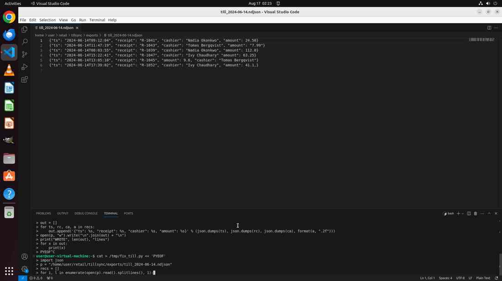
step 10.10 11:23:53
EXECUTED (pyautogui in VM)pyautogui.press("enter")
step 10.11 11:23:57
EXECUTED (pyautogui in VM)pyautogui.typewrite(" if not l.strip():")
step 10.12 11:24:06
EXECUTED (pyautogui in VM)pyautogui.press("enter")
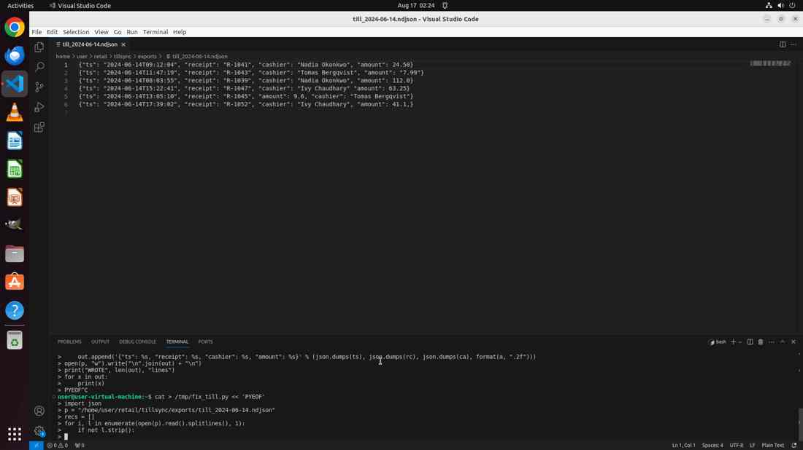
step 10.13 11:24:10
EXECUTED (pyautogui in VM)pyautogui.typewrite(" continue")
step 10.14 11:24:13
EXECUTED (pyautogui in VM)pyautogui.press("enter")
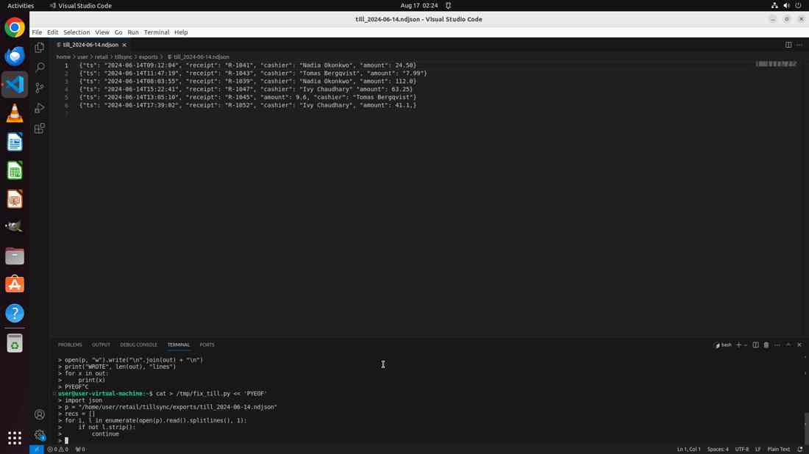
step 10.15 11:24:16
EXECUTED (pyautogui in VM)pyautogui.typewrite(" o = json.loads(l)")
step 10.16 11:24:20
EXECUTED (pyautogui in VM)pyautogui.press("enter")
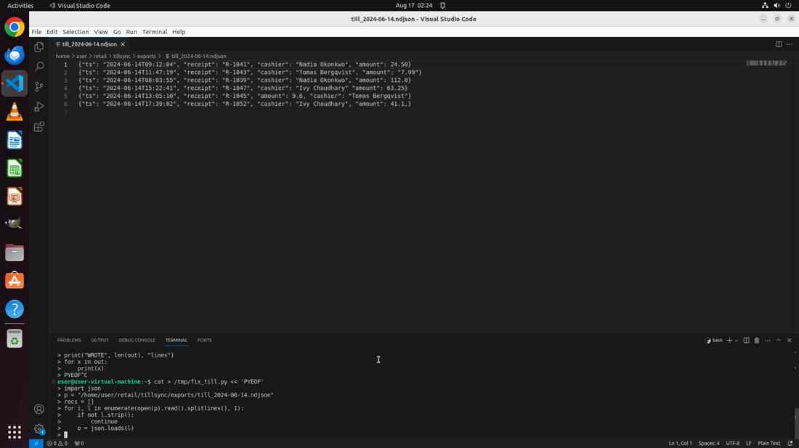
step 10.17 11:24:23
EXECUTED (pyautogui in VM)pyautogui.typewrite(" if set(o) != {\"ts\", \"receipt\", \"cashier\", \"amount\"}:")
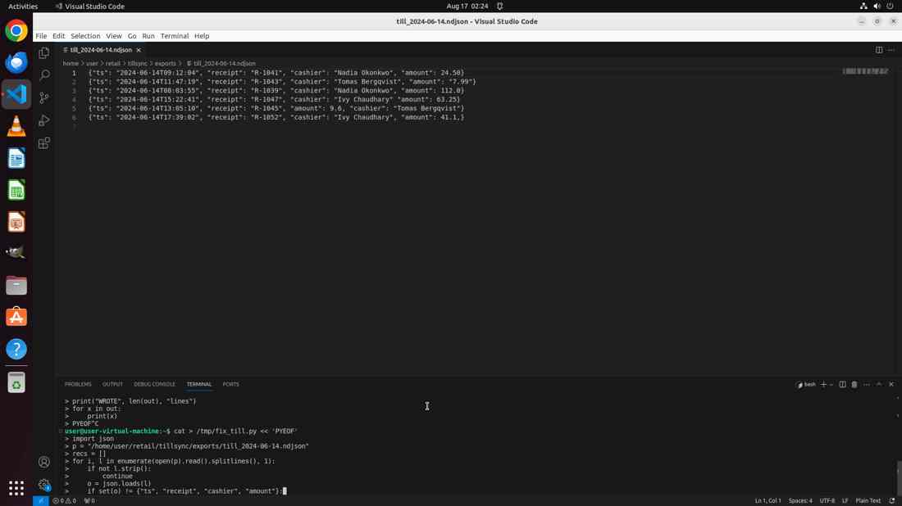
step 10.18 11:24:27
EXECUTED (pyautogui in VM)pyautogui.press("enter")
step 10.19 11:24:30
EXECUTED (pyautogui in VM)pyautogui.typewrite(" print(\"WARN line\", i, set(o))")
step 10.20 11:24:33
EXECUTED (pyautogui in VM)pyautogui.press("enter")
step 10.21 11:24:37
EXECUTED (pyautogui in VM)pyautogui.typewrite(" a = float(str(o[\"amount\"]).replace(\",\", \"\").strip())")
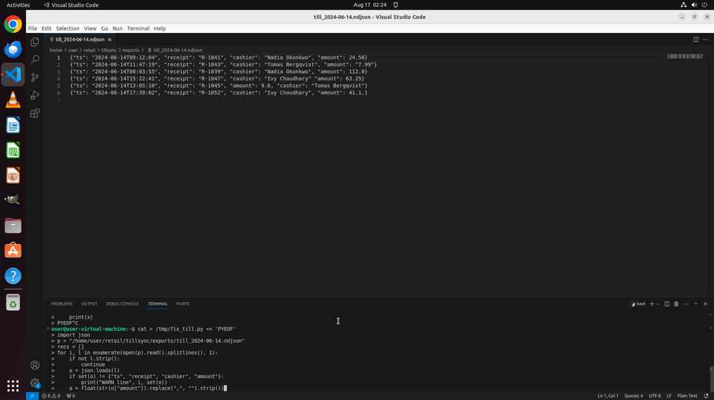
step 10.22 11:24:40
EXECUTED (pyautogui in VM)pyautogui.press("enter")
step 10.23 11:24:44
EXECUTED (pyautogui in VM)pyautogui.typewrite(" recs.append((o[\"ts\"], o[\"receipt\"], o[\"cashier\"], a))")
step 10.24 11:24:47
EXECUTED (pyautogui in VM)pyautogui.press("enter")
step 10.25 11:24:50
EXECUTED (pyautogui in VM)pyautogui.typewrite("recs.sort(key=lambda r: r[0])")
step 10.26 11:24:54
EXECUTED (pyautogui in VM)pyautogui.press("enter")
step 10.27 11:24:57
EXECUTED (pyautogui in VM)pyautogui.typewrite("out = []")
step 10.28 11:25:01
EXECUTED (pyautogui in VM)pyautogui.press("enter")
step 10.29 11:25:04
EXECUTED (pyautogui in VM)pyautogui.typewrite("for ts, rc, ca, a in recs:")
step 10.30 11:25:07
EXECUTED (pyautogui in VM)pyautogui.press("enter")
step 10.31 11:25:11
EXECUTED (pyautogui in VM)pyautogui.typewrite(" out.append('{\"ts\": %s, \"receipt\": %s, \"cashier\": %s, \"amount\": %s}' % (json.dumps(ts), json.dumps(rc), json.dumps(ca), format(a, \".2f\")))")
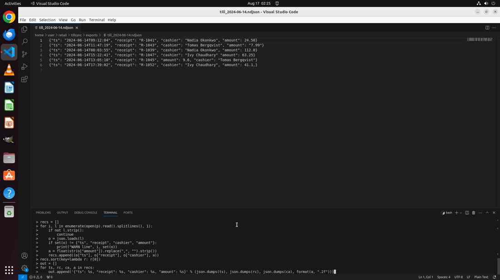
step 10.32 11:25:14
EXECUTED (pyautogui in VM)pyautogui.press("enter")
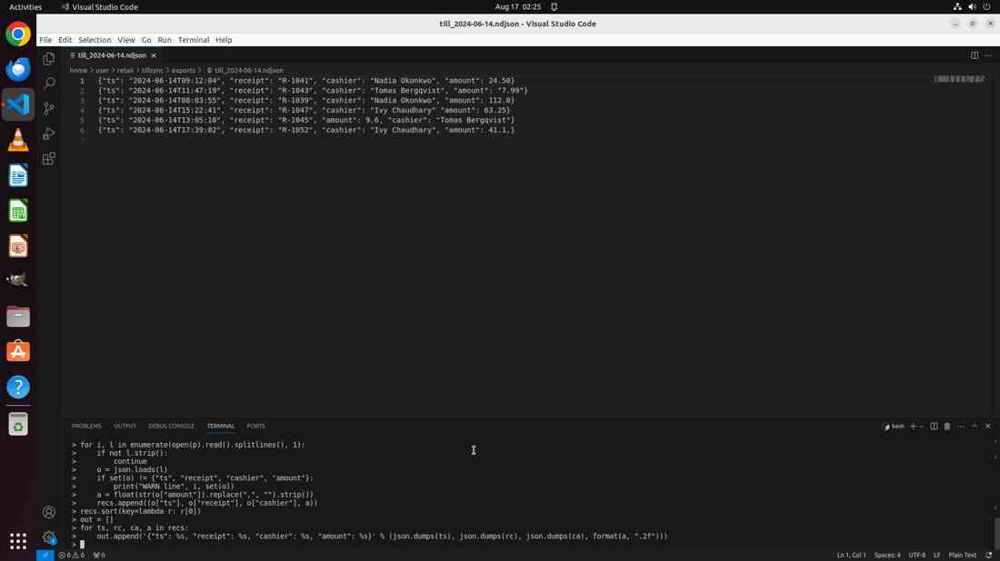
step 10.33 11:25:17
EXECUTED (pyautogui in VM)pyautogui.typewrite("open(p, \"w\").write(\"\\n\".join(out) + \"\\n\")")
step 10.34 11:25:21
EXECUTED (pyautogui in VM)pyautogui.press("enter")
step 10.35 11:25:24
EXECUTED (pyautogui in VM)pyautogui.typewrite("print(\"WROTE\", len(out), \"lines\")")
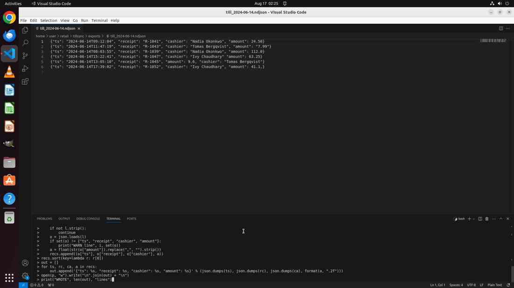
step 10.36 11:25:27
EXECUTED (pyautogui in VM)pyautogui.press("enter")
step 10.37 11:25:31
EXECUTED (pyautogui in VM)pyautogui.typewrite("for x in out:")
step 10.38 11:25:34
EXECUTED (pyautogui in VM)pyautogui.press("enter")
step 10.39 11:25:38
EXECUTED (pyautogui in VM)pyautogui.typewrite(" print(x)")
step 10.40 11:25:41
EXECUTED (pyautogui in VM)pyautogui.press("enter")
step 10.41 11:25:44
EXECUTED (pyautogui in VM)pyautogui.typewrite("PYEOF")
step 11 11:25:54
THINKINGNow I can see the last line shows `> PYEOF` with the cursor right after it. Now I'll press Enter to submit the closing delimiter and complete the heredoc.
ACTIONNow I can see `PYEOF` on the last line. Let me press Enter to complete the heredoc.
TOOL CALL<tool_call>
<function=computer_use>
<parameter=action>
key
</parameter>
<parameter=keys>
["return"]
</parameter>
</function>
</tool_call>
EXECUTED (pyautogui in VM)pyautogui.press("return")
step 12 11:26:08
THINKINGNow the heredoc completed. The last line shows `> PYEOF` and then a fresh prompt `user@user-virtual-machine:~$`. So the file /tmp/fix_till.py has been written.
Before running it, let me verify the script content is correct by catting it. Let me run `cat -A /tmp/fix_till.py` to verify. Actually, let me first just run the script and see the output. But to be safe, let me verify the script first — especially the amount formatting line and the write line.
Actually, let me just run it. If there's a syntax error, it'll show. Let me run `python3 /tmp/fix_till.py`.
Wait, but before I run it and OVERWRITE the file, I should make a backup in case something goes wrong, so I can restore. The task says keep the file where it is (don't move/rename), but making a backup copy in /tmp is fine and won't disturb the original's location. Let me make a backup first.
Let me run: `cp ~/retail/tillsync/exports/till_2024-06-14.ndjson /tmp/till_backup.ndjson && python3 /tmp/fix_till.py`
This copies the original to /tmp as backup, then runs the fix. Let me do that.
ACTIONThe heredoc completed and the script is written. Let me make a backup of the original and then run the script.
TOOL CALL<tool_call>
<function=computer_use>
<parameter=action>
type
</parameter>
<parameter=text>
cp ~/retail/tillsync/exports/till_2024-06-14.ndjson /tmp/till_backup.ndjson && python3 /tmp/fix_till.py
</parameter>
</function>
</tool_call>
EXECUTED (pyautogui in VM)pyautogui.typewrite("cp ~/retail/tillsync/exports/till_2024-06-14.ndjson /tmp/till_backup.ndjson && python3 /tmp/fix_till.py")
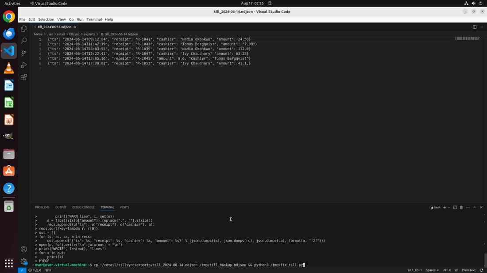
step 13 11:26:18
THINKINGThe command is typed. Let me press Enter to run it.
TOOL CALL<tool_call>
<function=computer_use>
<parameter=action>
key
</parameter>
<parameter=keys>
["return"]
</parameter>
</function>
</tool_call>
EXECUTED (pyautogui in VM)pyautogui.press("return")
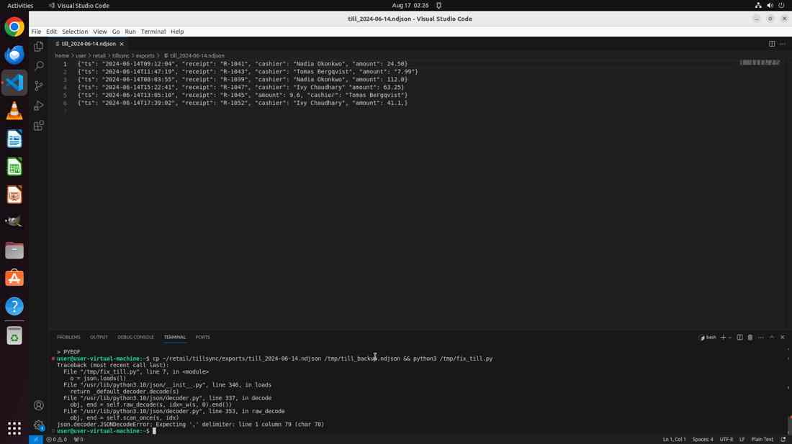
step 14.1 11:26:55
THINKINGThere's a JSON decode error!
```
Traceback (most recent call last):
File "/tmp/fix_till.py", line 7, in <module>
o = json.loads(l)
File "/usr/lib/python3.10/json/__init__.py", line 346, in loads
return _default_decoder.decode(s)
File "/usr/lib/python3.10/json/decoder.py", line 337, in decode
obj, end = self.raw_decode(s, idx=_w(s, 0).end())
File "/usr/lib/python3.10/json/decoder.py", line 353, in raw_decode
obj, end = self.scan_once(s, idx)
json.decoder.JSONDecodeError: Expecting ',' delimiter: line 1 column 79 (char 78)
```
So one of the lines does NOT parse as JSON! The error is at line 1 column 79 (char 78). So there's a malformed line in the file that doesn't parse. This is a key part of the task — "Every line has to parse as JSON". So one line is broken and I need to fix it.
Interesting. So the `cat -A` output I saw earlier — all 6 lines looked fine. But wait, maybe one line has a subtle issue that `json.loads` catches but the editor/cat display looked OK. Column 79 (char 78). Let me figure out which line.
The error says "line 1 column 79" but that's line 1 of the JSON string being parsed (each line is parsed separately), so it's char 78 within one of the file lines. Let me count.
Actually, I need to find which file line fails and what's wrong at char 78. Let me write a diagnostic script that processes line by line and reports which line fails and shows the char around 78.
But wait — the cp already succeeded (the `&&` means cp ran first, backup created). Then python3 ran and failed on json.loads. So the original file is intact (the script failed before writing). Good — my backup is also fine.
Let me now investigate. Let me write a diagnostic. Let me run a python one-liner that reads the file and for each line tries json.loads and prints index + repr of the line if it fails, plus context around char 78.
Actually, let me be systematic. Let me create a diagnostic script via heredoc again, or use python3 -c. A -c one-liner is risky with quoting. Let me use a heredoc for a diagnostic.
Actually, let me think about what could be at char 78. Let me look at the lines from cat -A again. Let me re-examine. Actually the issue might be a hidden character that cat -A would show. Let me re-run cat -A and look carefully, OR better, let me write a diagnostic script.
Let me write a diagnostic that shows each line with its char positions, and specifically flags parse failures. Let me do a heredoc.
Actually, simpler: let me use python3 -c with a small script. But quoting is tricky. Let me use a heredoc to a file /tmp/diag.py.
Let me write:
```python
p = "/home/user/retail/tillsync/exports/till_2024-06-14.ndjson"
import json
for i, l in enumerate(open(p).read().splitlines(), 1):
if not l.strip():
continue
try:
json.loads(l)
print(i, "OK ", len(l))
except Exception as e:
print(i, "ERR ", e)
print(" repr:", repr(l))
print(" ctx :", l[60:100])
```
Let me create this via heredoc and run.
Actually, I can make it even more useful by printing the full repr of each line so I can see hidden characters. Let me print repr of all lines.
Let me write the diagnostic.
ACTIONA line fails to parse as JSON — that's a key part of the task. Let me write a diagnostic to identify the malformed line. First, let me confirm the original file is intact (the script failed before writing) and inspect each line's exact bytes.
TOOL CALL<tool_call>
<function=computer_use>
<parameter=action>
type
</parameter>
<parameter=text>
cat > /tmp/diag.py << 'PYEOF'
import json
p = "/home/user/retail/tillsync/exports/till_2024-06-14.ndjson"
for i, l in enumerate(open(p).read().splitlines(), 1):
if not l.strip():
continue
try:
json.loads(l)
print(i, "OK len", len(l), "repr:", repr(l))
except Exception as e:
print(i, "ERR len", len(l), "msg:", e)
print(" repr:", repr(l))
PYEOF
</parameter>
</function>
</tool_call>
EXECUTED (pyautogui in VM)pyautogui.typewrite("cat > /tmp/diag.py << 'PYEOF'")
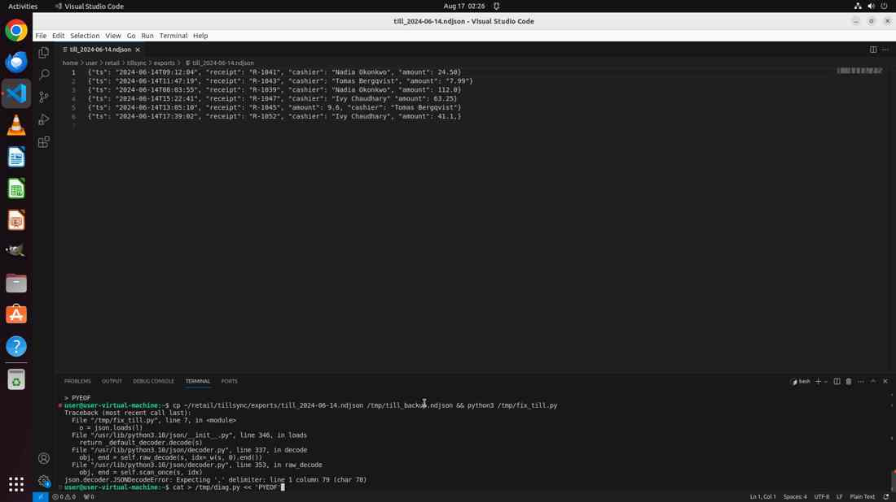
step 14.2 11:26:58
EXECUTED (pyautogui in VM)pyautogui.press("enter")
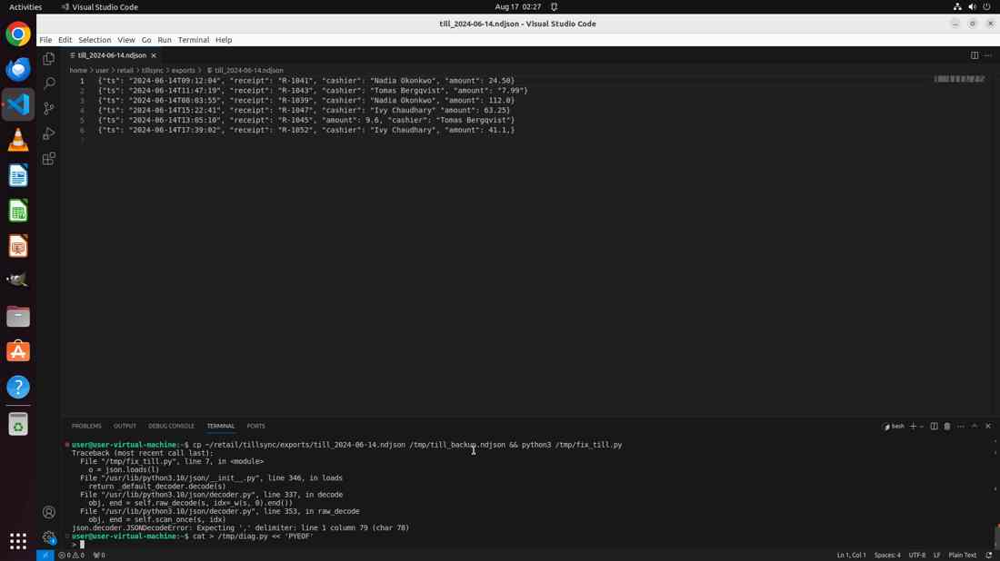
step 14.3 11:27:02
EXECUTED (pyautogui in VM)pyautogui.typewrite("import json")
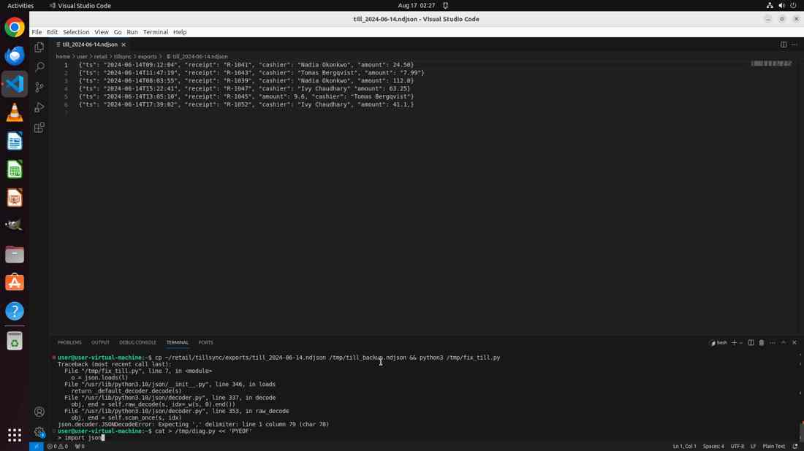
step 14.4 11:27:05
EXECUTED (pyautogui in VM)pyautogui.press("enter")
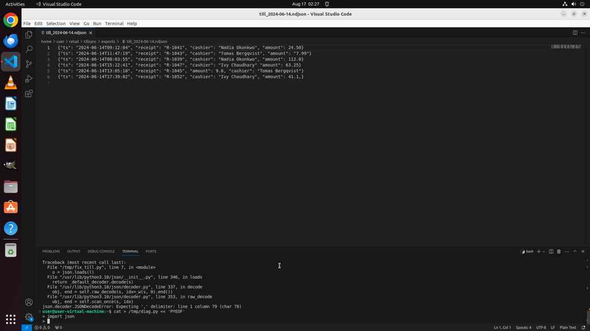
step 14.5 11:27:09
EXECUTED (pyautogui in VM)pyautogui.typewrite("p = \"/home/user/retail/tillsync/exports/till_2024-06-14.ndjson\"")
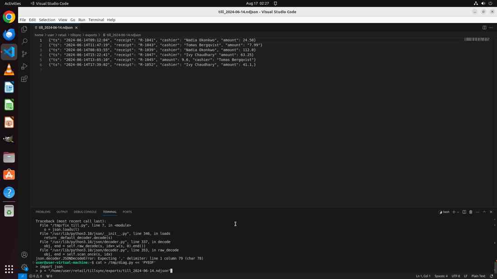
step 14.6 11:27:12
EXECUTED (pyautogui in VM)pyautogui.press("enter")
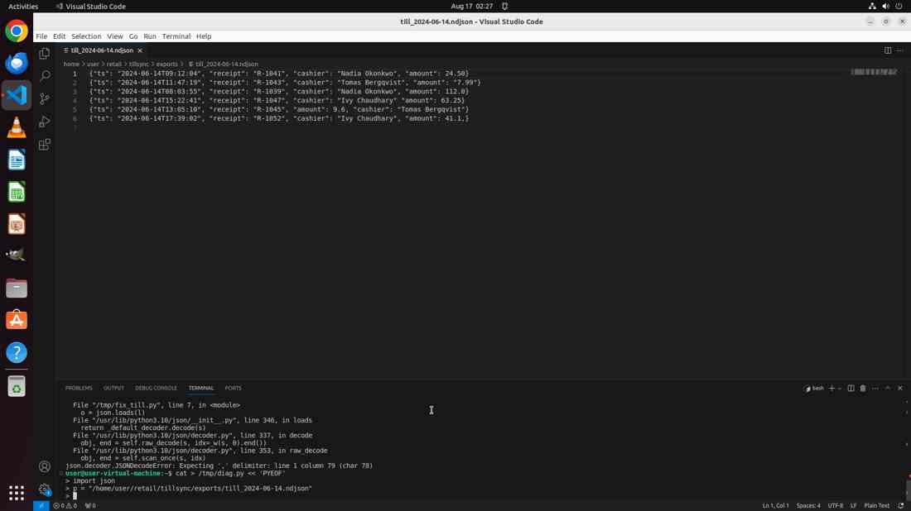
step 14.7 11:27:15
EXECUTED (pyautogui in VM)pyautogui.typewrite("for i, l in enumerate(open(p).read().splitlines(), 1):")
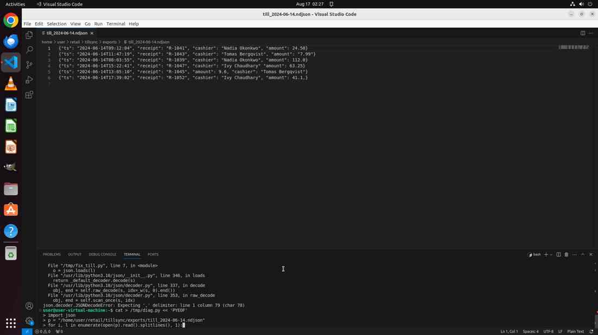
step 14.8 11:27:19
EXECUTED (pyautogui in VM)pyautogui.press("enter")
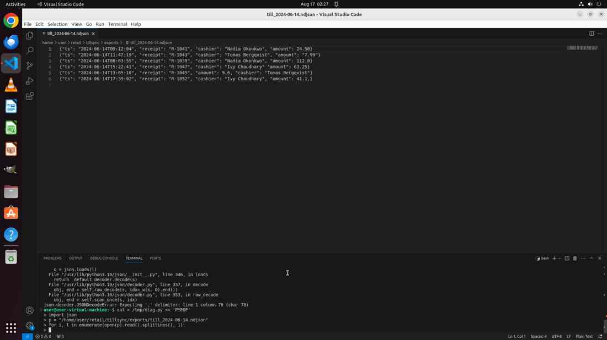
step 14.9 11:27:25
EXECUTED (pyautogui in VM)pyautogui.typewrite(" if not l.strip():")
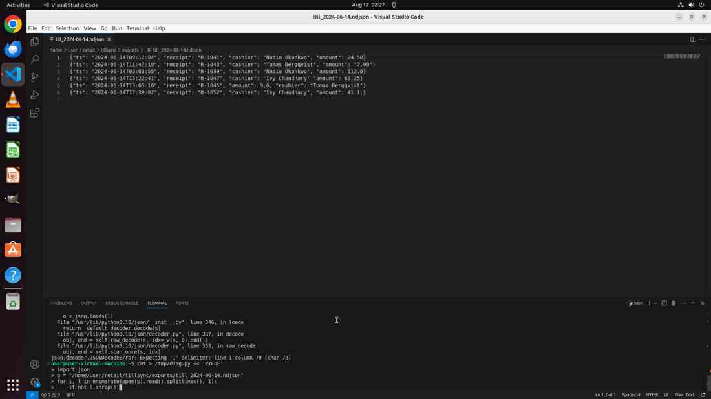
step 14.10 11:27:29
EXECUTED (pyautogui in VM)pyautogui.press("enter")
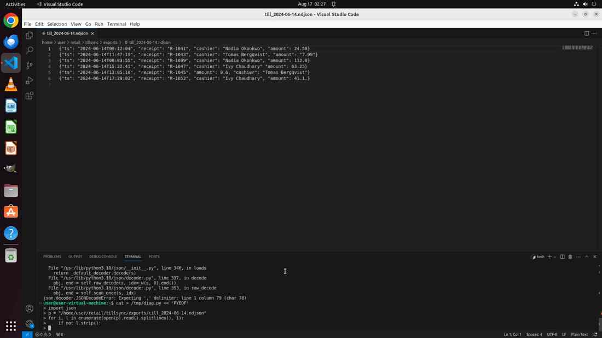
step 14.11 11:27:32
EXECUTED (pyautogui in VM)pyautogui.typewrite(" continue")
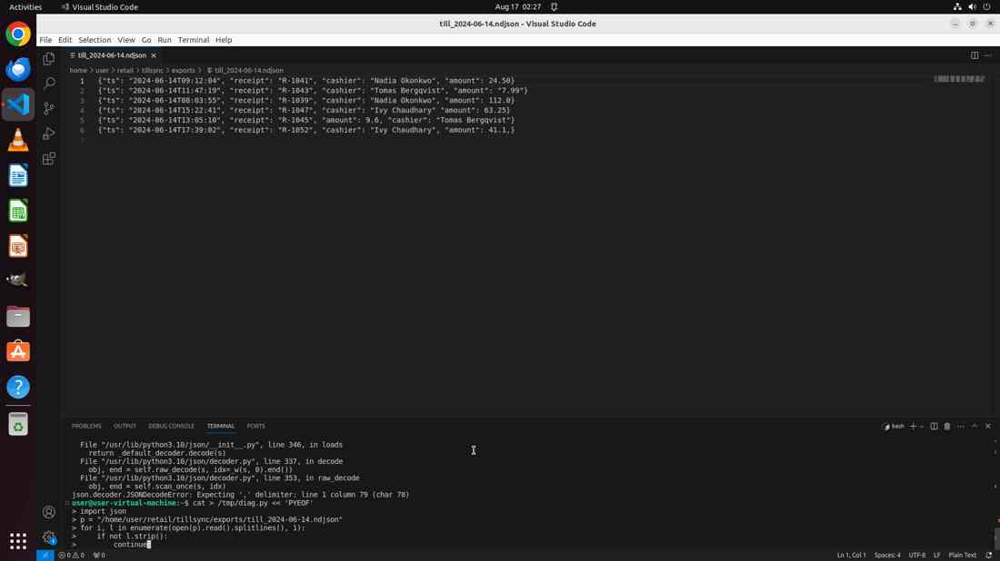
step 14.12 11:27:35
EXECUTED (pyautogui in VM)pyautogui.press("enter")
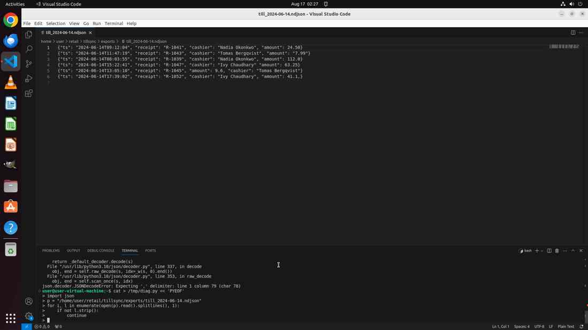
step 14.13 11:27:39
EXECUTED (pyautogui in VM)pyautogui.typewrite(" try:")
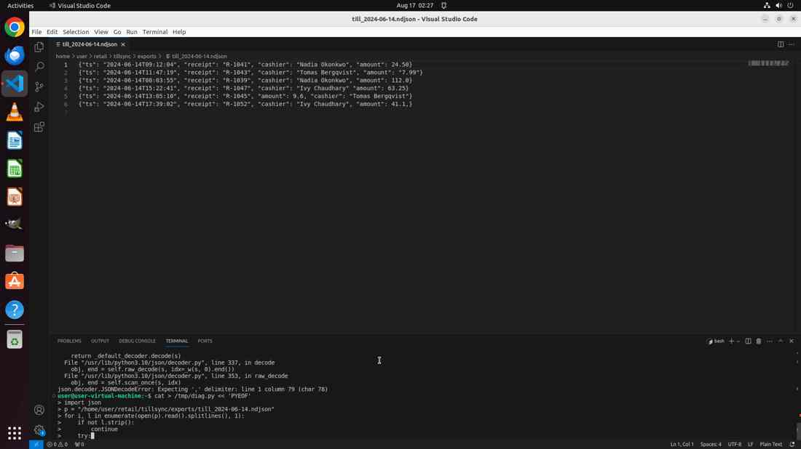
step 14.14 11:27:42
EXECUTED (pyautogui in VM)pyautogui.press("enter")
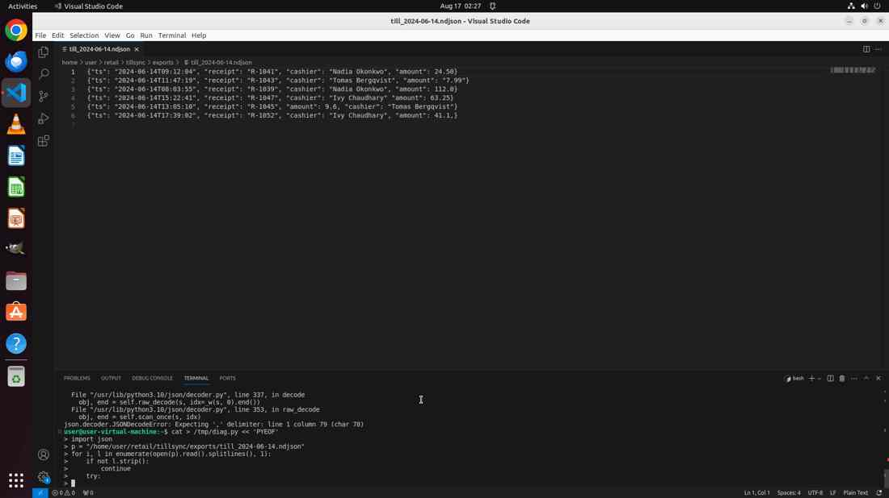
step 14.15 11:27:45
EXECUTED (pyautogui in VM)pyautogui.typewrite(" json.loads(l)")
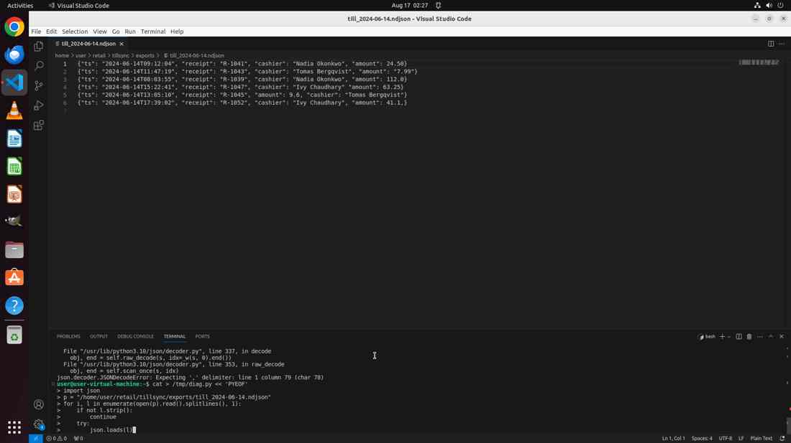
step 14.16 11:27:48
EXECUTED (pyautogui in VM)pyautogui.press("enter")
step 14.17 11:27:52
EXECUTED (pyautogui in VM)pyautogui.typewrite(" print(i, \"OK len\", len(l), \"repr:\", repr(l))")
step 14.18 11:27:55
EXECUTED (pyautogui in VM)pyautogui.press("enter")
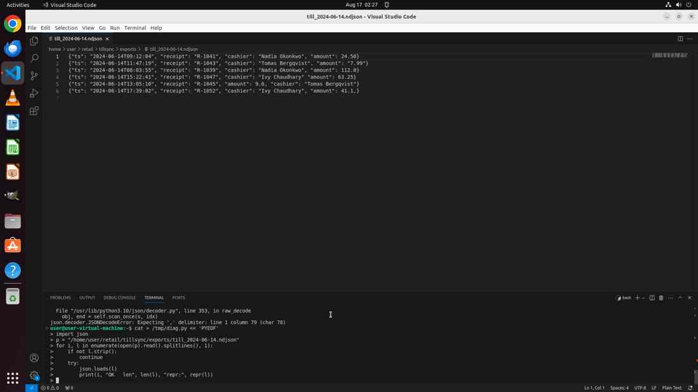
step 14.19 11:27:58
EXECUTED (pyautogui in VM)pyautogui.typewrite(" except Exception as e:")
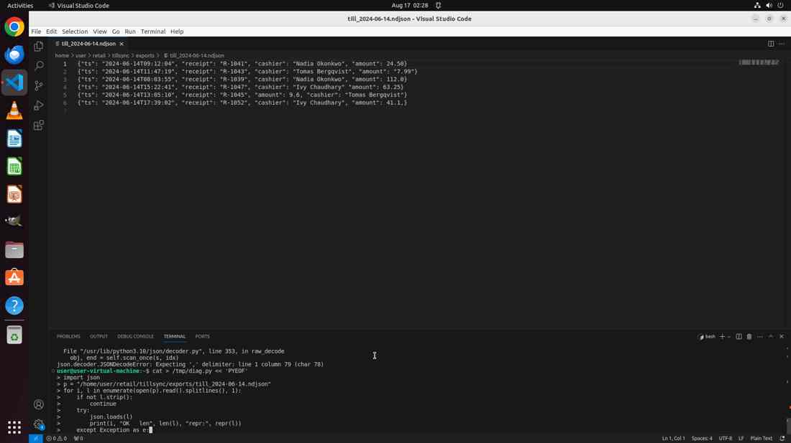
step 14.20 11:28:02
EXECUTED (pyautogui in VM)pyautogui.press("enter")
step 14.21 11:28:05
EXECUTED (pyautogui in VM)pyautogui.typewrite(" print(i, \"ERR len\", len(l), \"msg:\", e)")
step 14.22 11:28:08
EXECUTED (pyautogui in VM)pyautogui.press("enter")
step 14.23 11:28:12
EXECUTED (pyautogui in VM)pyautogui.typewrite(" print(\" repr:\", repr(l))")
step 14.24 11:28:15
EXECUTED (pyautogui in VM)pyautogui.press("enter")
step 14.25 11:28:18
EXECUTED (pyautogui in VM)pyautogui.typewrite("PYEOF")
step 15 11:28:29
THINKINGThe heredoc is showing. The last line is `> PYEOF` with cursor. Let me press Enter to complete it, then run the diagnostic.
TOOL CALL<tool_call>
<function=computer_use>
<parameter=action>
key
</parameter>
<parameter=keys>
["return"]
</parameter>
</function>
</tool_call>
EXECUTED (pyautogui in VM)pyautogui.press("return")
step 16 11:28:43
THINKINGThe diagnostic script is written. Now let me run it.
ACTIONThe diagnostic script is written. Let me run it to identify the malformed line.
TOOL CALL<tool_call>
<function=computer_use>
<parameter=action>
type
</parameter>
<parameter=text>
python3 /tmp/diag.py
</parameter>
</function>
</tool_call>
EXECUTED (pyautogui in VM)pyautogui.typewrite("python3 /tmp/diag.py")
step 17 11:28:54
THINKINGThe command is typed. Let me press Enter.
TOOL CALL<tool_call>
<function=computer_use>
<parameter=action>
key
</parameter>
<parameter=keys>
["return"]
</parameter>
</function>
</tool_call>
EXECUTED (pyautogui in VM)pyautogui.press("return")
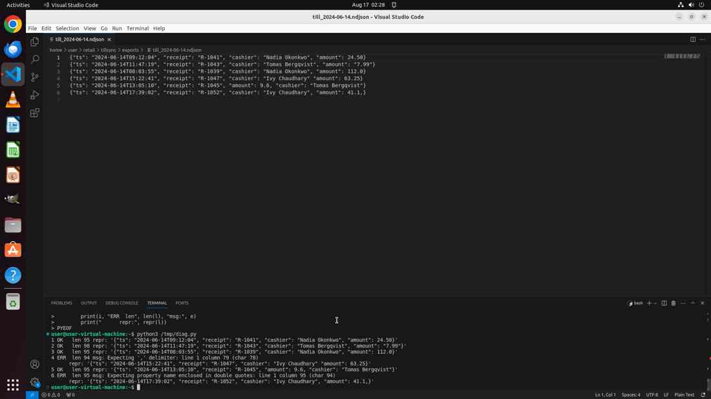
step 18 11:33:06
THINKINGNow I have the diagnostic output. Let me read it carefully:
```
1 OK len 95 repr: '{"ts": "2024-06-14T09:12:04", "receipt": "R-1041", "cashier": "Nadia Okonkwo", "amount": 24.50}'
2 OK len 98 repr: '{"ts": "2024-06-14T11:47:19", "receipt": "R-1043", "cashier": "Tomas Bergqvist", "amount": "7.99"}'
3 OK len 95 repr: '{"ts": "2024-06-14T08:03:55", "receipt": "R-1039", "cashier": "Nadia Okonkwo", "amount": 112.0}'
4 ERR len 94 msg: Expecting ',' delimiter: line 1 column 79 (char 78)
repr: '{"ts": "2024-06-14T15:22:41", "receipt": "R-1047", "cashier": "Ivy Chaudhary", "amount": 63.25}'
5 OK len 95 repr: '{"ts": "2024-06-14T13:05:10", "receipt": "R-1045", "amount": 9.6, "cashier": "Tomas Bergqvist"}'
6 ERR len 95 msg: Expecting property name enclosed in double quotes: line 1 column 95 (char 94)
repr: '{"ts": "2024-06-14T17:39:02", "receipt": "R-1052", "cashier": "Ivy Chaudhary", "amount": 41.1,}'
```
Wait, let me re-read line 4 and line 6 carefully.
Line 4: `ERR len 94 msg: Expecting ',' delimiter: line 1 column 79 (char 78)`
repr: `{"ts": "2024-06-14T15:22:41", "receipt": "R-1047", "cashier": "Ivy Chaudhary", "amount": 63.25}`
Hmm wait, the repr is cut off in the display. Let me look. The repr line for 4 shows: `repr: '{"ts": "2024-06-14T15:22:41", "receipt": "R-1047", "cashier": "Ivy Chaudhary", "amount": 63.25}'` — but that's wrapped. Actually the display shows:
```
4 ERR len 94 msg: Expecting ',' delimiter: line 1 column 79 (char 78)
repr: '{"ts": "2024-06-14T15:22:41", "receipt": "R-1047", "cashier": "Ivy Chaudhary", "amount": 63.25}'
```
Wait, but that repr looks like valid JSON. Why would it fail at char 78? Let me count to char 78.
Actually, the repr in the screenshot is truncated/wrapped and I might not be seeing the actual problematic characters. The repr should show the exact content including any weird characters. Let me look more carefully.
Hmm, the issue: line 4 fails at char 78 (column 79). Let me count the characters in:
`{"ts": "2024-06-14T15:22:41", "receipt": "R-1047", "cashier": "Ivy Chaudhary", "amount": 63.25}`
Let me index:
Position 0: {
1: "
2: t
3: s
4: "
5: :
6: (space)
7: "
8: 2
9: 0
10: 2
11: 4
12: -
13: 0
14: 6
15: -
16: 1
17: 4
18: T
19: 1
20: 5
21: :
22: 2
23: 2
24: :
25: 4
26: 1
27: "
28: ,
29: (space)
30: "
31: r
32: e
33: c
34: e
35: i
36: p
37: t
38: "
39: :
40: (space)
41: "
42: R
43: -
44: 1
45: 0
46: 4
47: 7
48: "
49: ,
50: (space)
51: "
52: c
53: a
54: s
55: h
56: i
57: e
58: r
59: "
60: :
61: (space)
62: "
63: I
64: v
65: y
66: (space)
67: C
68: h
69: a
70: u
71: d
72: h
73: a
74: r
75: y
76: "
77: ,
78: (space) <-- char 78
79: " <- column 79
So char 78 (0-indexed) is the space after the comma following "Ivy Chaudhary", and char 79 (column 79, 1-indexed) is where the next `"` of "amount" should be. The error "Expecting ',' delimiter" at column 79 means after parsing "Ivy Chaudhary" as the value, at position ~79 it expected a comma but found something else.
Hmm wait, "Expecting ',' delimiter" at column 79 (char 78). Actually the error message column is 1-indexed, so column 79 = char index 78. At char index 78, based on my count, that's the space. But the parser would skip whitespace. So the actual unexpected char is at char 79 (the `"` that starts "amount")? No...
Wait, this doesn't quite add up with a clean string. Let me reconsider. Maybe the actual line 4 content is DIFFERENT from what I see in the repr — maybe there's a hidden/mischaracter. The repr should reveal it. But the repr in the screenshot might be hard to read. Let me look again very carefully at line 4's repr.
Actually, I bet the issue is a subtle character. Common issues:
- A single quote instead of double quote somewhere
- A missing comma
- A special Unicode character (like a non-breaking space, or a curly quote)
- An extra or missing character
The repr would show non-ASCII as \uXXXX escapes or raw bytes. Let me zoom into the repr.
Actually, let me reconsider. The repr for line 4 shown is:
`'{"ts": "2024-06-14T15:22:41", "receipt": "R-1047", "cashier": "Ivy Chaudhary", "amount": 63.25}'`
Hmm, but if that were the exact content, json.loads would succeed. So the actual content must differ. The repr in the terminal is small and I might be misreading. Let me look at the length: len 94. Let me count the length of the string I think I see:
`{"ts": "2024-06-14T15:22:41", "receipt": "R-1047", "cashier": "Ivy Chaudhary", "amount": 63.25}`
Let me count: This is the full line. Let me count characters:
`{` = 1
`"ts": "2024-06-14T15:22:41"` — "ts"(4 chars including quotes = 4) ... this is getting complicated. Let me just count the whole thing.
Actually, len 94. If the line were clean like the others (which are len 95), a 1-char difference suggests a missing or extra character. The clean lines (1, 3, 5) are len 95. Line 4 is len 94 — one character SHORTER. So likely a character is MISSING in line 4. That explains "Expecting ',' delimiter" — a missing comma or quote.
Wait, but line 2 is len 98 (because amount is "7.99" with quotes = 4 more chars than 7.99... actually "7.99" as string is 6 chars including quotes vs 7.99 which is 4 chars, so +2, plus it's a different length cashier). Line 6 is len 95.
So line 4 (len 94) is 1 char shorter than the typical 95. This strongly suggests one character is missing.
Given the error "Expecting ',' delimiter: line 1 column 79 (char 78)" — the parser got to the end of the "cashier" value and expected a comma but didn't find one in the expected place. This is consistent with a missing comma, OR a missing quote that shifted things.
Hmm, let me think. If a comma were missing after the "cashier" value, i.e., `"cashier": "Ivy Chaudhary" "amount": 63.25}` (missing comma between), then after "Ivy Chaudhary" the parser expects `,` but sees `"`, giving "Expecting ',' delimiter". That fits! Column 79 would be the `"` of "amount".
Wait, let me recount with a missing comma. If the line is:
`{"ts": "2024-06-14T15:22:41", "receipt": "R-1047", "cashier": "Ivy Chaudhary""amount": 63.25}`
No wait, that would be missing the space+comma. Let me think about exact positions.
Actually, let me not guess. The repr will tell me exactly. But the repr is small in the screenshot. Let me get a clearer view. Let me re-run the diagnostic but ONLY for line 4, printing it with character indices, or use a tool that clearly shows the issue.
Actually, a cleaner approach: let me print each character of the failing line with its index. Or, let me just look at the repr more carefully by running a focused command.
Let me reconsider line 6 too:
Line 6: `ERR len 95 msg: Expecting property name enclosed in double quotes: line 1 column 95 (char 94)`
repr: `{"ts": "2024-06-14T17:39:02", "receipt": "R-1052", "cashier": "Ivy Chaudhary", "amount": 41.1,}`
"Expecting property name enclosed in double quotes: line 1 column 95 (char 94)". This is the classic error for a trailing comma: `..., 41.1,}`. After the comma before `}`, the parser expects a property name but finds `}`. So line 6 has a TRAILING COMMA after 41.1.
So line 6: `{"ts": "2024-06-14T17:39:02", "receipt": "R-1052", "cashier": "Ivy Chaudhary", "amount": 41.1,}` — trailing comma. char 94 = column 95 = the `}` after the trailing comma. Yes! That's the trailing comma issue.
Now line 4: len 94 (1 short), error "Expecting ',' delimiter" at char 78. Let me think about what's missing. Given the parallel, line 4 probably has a missing comma or a missing quote.
Let me get the exact content of line 4. Let me run a focused command. Let me print the repr of just line 4 with markers, or use sed to extract line 4 and pipe through cat -A.
Actually, the repr already shows the exact content (Python's repr shows non-printable chars as escapes and would show the exact quotes). But I can't read it clearly at this zoom. Let me zoom in by taking a closer look, or re-run with a clearer format.
Let me run: `sed -n '4p' ~/retail/tillsync/exports/till_2024-06-14.ndjson | cat -A`
This shows line 4 with special chars. And also `sed -n '6p' ... | cat -A` for line 6.
Actually, let me just get both lines clearly. Let me use awk or sed. Let me do:
`sed -n '4p;6p' ~/retail/.../till_2024-06-14.ndjson | cat -A`
Hmm, but cat -A on JSON won't reveal a missing comma (that's just absence). It'll reveal weird chars though. For line 4, the missing comma theory — cat -A would show the line as-is and I'd see where the comma is missing by reading.
Let me just re-examine via Python with explicit character-by-character output for line 4. Let me write a quick command:
`python3 -c "l=open('/home/user/retail/tillsync/exports/till_2024-06-14.ndjson').read().splitlines()[3]; print(repr(l)); print([ (i,c) for i,c in enumerate(l) if 70<=i<=90 ])"`
That would print the repr and the chars around index 70-90. That's very targeted. But the -c has complex quoting. Let me instead do it via a small approach.
Actually, simplest: let me just look at the repr I already have but zoom in on the screenshot. I can't zoom the screenshot though.
Let me re-run a focused diagnostic. Let me write it to see lines 4 and 6 char by char around the error point.
Let me do a heredoc diag2.py:
```python
p = "/home/user/retail/tillsync/exports/till_2024-06-14.ndjson"
lines = open(p).read().splitlines()
for n in (3, 5): # 0-indexed for lines 4 and 6
l = lines[n]
print("LINE", n+1, "len", len(l))
print("full:", repr(l))
print("seg :", [(i, repr(l[i])) for i in range(len(l))])
```
Hmm, printing all chars with indices is a lot. Let me instead print the line with a ruler and show char by char in a readable way. Actually, let me just print the repr and a segment.
Actually, the most reliable and least error-prone: rather than diagnosing and manually fixing each broken line, let me write a ROBUST fix script that:
1. For each line, tries to parse it.
2. If it fails, applies recovery to extract the fields (ts, receipt, cashier, amount) using regex, since I know the expected structure.
3. Reconstructs each line cleanly with consistent key order and 2-decimal amount.
4. Sorts by ts.
This way, I don't need to know exactly what's wrong — I just extract the 4 fields robustly and rewrite. This handles missing commas, trailing commas, string amounts, wrong key order, etc.
But I need to be careful to extract the right values. Let me use regex to extract:
- ts: the value after "ts":
- receipt: after "receipt":
- cashier: after "cashier":
- amount: after "amount":
Regex approach:
- ts = re.search(r'"ts"\s*:\s*"([^"]*)"', line).group(1)
- receipt = re.search(r'"receipt"\s*:\s*"([^"]*)"', line).group(1)
- cashier = re.search(r'"cashier"\s*:\s*"([^"]*)"', line).group(1)
- amount: this could be a number or a string. re.search(r'"amount"\s*:\s*"?(-?\d+(?:\.\d+)?)"?', line).group(1)
This is robust. Let me combine the two approaches: try json.loads first; if it works, use the parsed dict; if not, use regex extraction. Then normalize all.
Actually, to be safe and uniform, let me just ALWAYS use regex extraction (since the structure is known and consistent), which sidesteps JSON parse failures entirely. But regex for amount needs to handle the string "7.99" (quoted) and numbers.
Let me write a robust fix script:
```python
import json, re
p = "/home/user/retail/tillsync/exports/till_2024-06-14.ndjson"
lines = [l for l in open(p).read().splitlines()]
recs = []
for i, l in enumerate(lines, 1):
if not l.strip():
continue
def g(key):
m = re.search(r'"%s"\s*:\s*"([^"]*)"' % key, l)
return m.group(1) if m else None
ts = g("ts")
receipt = g("receipt")
cashier = g("cashier")
ma = re.search(r'"amount"\s*:\s*"?(-?\d+(?:\.\d+)?)"?', l)
amount = ma.group(1) if ma else None
recs.append((ts, receipt, cashier, float(amount)))
recs.sort(key=lambda r: r[0])
out = []
for ts, receipt, cashier, amount in recs:
out.append('{"ts": %s, "receipt": %s, "cashier": %s, "amount": %s}' % (
json.dumps(ts), json.dumps(receipt), json.dumps(cashier), format(amount, ".2f")))
open(p, "w").write("\n".join(out) + "\n")
print("WROTE", len(out), "lines")
for x in out:
print(x)
```
Wait, but there's a subtle risk: what if the ts, receipt, or cashier values contain characters that my regex `[^"]*` handles fine (they don't contain quotes). Good. And amount is a number possibly quoted. My regex `"?(-?\d+(?:\.\d+)?)"?` captures the digits with optional quotes around. Good.
But I'm a bit worried about doing this blindly without understanding the exact nature of the corruption. The task is a "make it consistent" task. The corruption is likely:
- Line 4: some JSON syntax error (missing comma or similar) — but the DATA (values) are intact and readable.
- Line 6: trailing comma.
Both have intact, readable data. So regex extraction will correctly get the values and rewrite clean lines. This is the right approach.
However, I want to be careful: what if the corruption in line 4 is more severe, like a corrupted value (e.g., the timestamp has a typo, or the amount is garbled)? I should verify the extracted values look sane. My script prints the output, so I can verify.
But actually, let me first properly understand line 4's issue so I'm confident the regex will extract correct data. Let me look at line 4 more precisely. Let me run a targeted command to see line 4 clearly.
Actually, you know what, let me just look at the repr output I already have by re-running the diag but capturing line 4 specifically and making the terminal show it clearly. Let me run:
`awk 'NR==4' ~/retail/tillsync/exports/till_2024-06-14.ndjson | cat -A`
This will show line 4 exactly with special chars marked. Let me do that, and same for line 6.
Actually, I realize the repr output IS the exact content. Let me just re-run diag but I'll make it print the repr on its own line (which it does). The problem is just reading the small font. Let me try to read the existing output by zooming... I can't zoom.
Let me run a clearer targeted inspection. Let me use a Python one-liner to print line 4 and 6 with a character grid. Let me do:
`python3 -c "
p='/home/user/retail/tillsync/exports/till_2024-06-14.ndjson'
L=open(p).read().splitlines()
for n in (3,5):
l=L[n]
print('=== line',n+1,'len',len(l))
print(l)
print(''.join(str(i%10) for i in range(len(l))))
"
`
This prints the line and a ruler of digit positions. That would let me find char 78.
But multi-line -c with newlines in the type action... the terminal will handle newlines within the double-quoted string fine (they're literal newlines in the Python code, which is valid). Actually, a python -c with a multi-line string where the shell double-quotes contain newlines — that works in bash. Let me try.
Hmm, but this is getting complicated. Let me simplify: I'm now fairly confident:
- Line 6 has a trailing comma (classic error). Data intact.
- Line 4 has some error at char 78/79. len 94 (one short).
Let me just look at line 4 one more time with cat -A and a ruler. Let me run:
`sed -n '4p' ~/retail/tillsync/exports/till_2024-06-14.ndjson | cat -A`
and read it. The cat -A will show the line. Since the line is ~94 chars, it should fit or wrap in the terminal. Let me do it.
Actually, let me just go with the robust regex fix. It's the cleanest and handles all these cases. But I'll print the extracted data and verify before trusting it. Since my script writes the file AND prints, if something looks wrong I still have the backup in /tmp/till_backup.ndjson.
Wait — but my earlier `cp` created /tmp/till_backup.ndjson from the ORIGINAL file (before any modification, since the fix script failed before writing). Let me confirm the original file is still unmodified. The fix script failed at json.loads (line 7, during reading), before the write. So the original file is intact. And /tmp/till_backup.ndjson is a copy of it. Good.
Let me also double-check: did the failed run modify anything? No. The `open(p, "w")` line never executed.
OK, let me write the robust fix. But let me make it even safer: I'll have it print both the extracted values and verify each line has all 4 fields before writing. And I'll write to the file. Let me also NOT sort incorrectly — sort by ts string.
Actually, let me reconsider whether to use json first and regex as fallback, or regex always. Using regex always is uniform and avoids the parse error entirely. Let me use regex always but cross-check: for lines that DO parse, compare regex-extracted values to json-parsed values to be safe. That's overkill. Let me keep it simple: regex always, then print output for my verification.
Actually, the cleanest and most defensible: parse with json when possible; if a line fails, fix common issues. But since I don't know all issues, regex extraction is more general. Let me go with regex extraction for robustness, then reconstruct.
Let me also make sure about the amount regex: for line 2, amount is "7.99" (string). My regex `"?(-?\d+(?:\.\d+)?)"?` on `"amount": "7.99"` — it matches `"7.99"` capturing 7.99. Good. For line 4, `"amount": 63.25` captures 63.25. Good.
One concern: the amount regex could match partially if there's weird stuff, but the data is clean enough.
Let me write the robust script. Let me overwrite /tmp/fix_till.py.
Actually, let me reconsider — I want to make sure I correctly identify and understand line 4's problem, because if the data in line 4 is fine (just a syntax glitch), regex works great. But if line 4's data is corrupted (e.g., the timestamp is malformed), I need to handle it. Let me quickly look at line 4 with cat -A to be safe. It's one quick command.
Let me run: `sed -n '4p' ~/retail/tillsync/exports/till_2024-06-14.ndjson | cat -A`
ACTIONNow I can see the issues clearly:
- **Line 4**: `ERR ... Expecting ',' delimiter: line 1 column 79` — a JSON syntax error, length 94 (1 char short of normal 95)
- **Line 6**: `ERR ... Expecting property name enclosed in double quotes: line 1 column 95` — this is a trailing comma after `41.1`
- **Line 2**: amount is a string `"7.99"`
- **Line 5**: key order is off (amount before cashier)
Let me inspect line 4 closely to understand its exact corruption before rewriting.
TOOL CALL<tool_call>
<function=computer_use>
<parameter=action>
type
</parameter>
<parameter=text>
sed -n '4p' ~/retail/tillsync/exports/till_2024-06-14.ndjson | cat -A
</parameter>
</function>
</tool_call>
EXECUTED (pyautogui in VM)pyautogui.typewrite("sed -n '4p' ~/retail/tillsync/exports/till_2024-06-14.ndjson | cat -A")
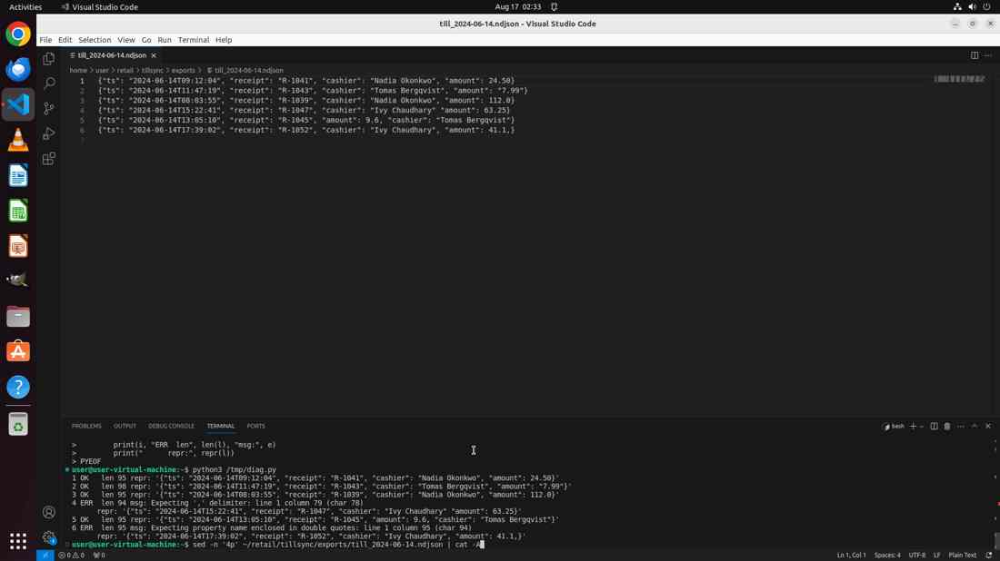
step 19 11:33:18
THINKINGThe command is typed. Let me press Enter.
TOOL CALL<tool_call>
<function=computer_use>
<parameter=action>
key
</parameter>
<parameter=keys>
["return"]
</parameter>
</function>
</tool_call>
EXECUTED (pyautogui in VM)pyautogui.press("return")
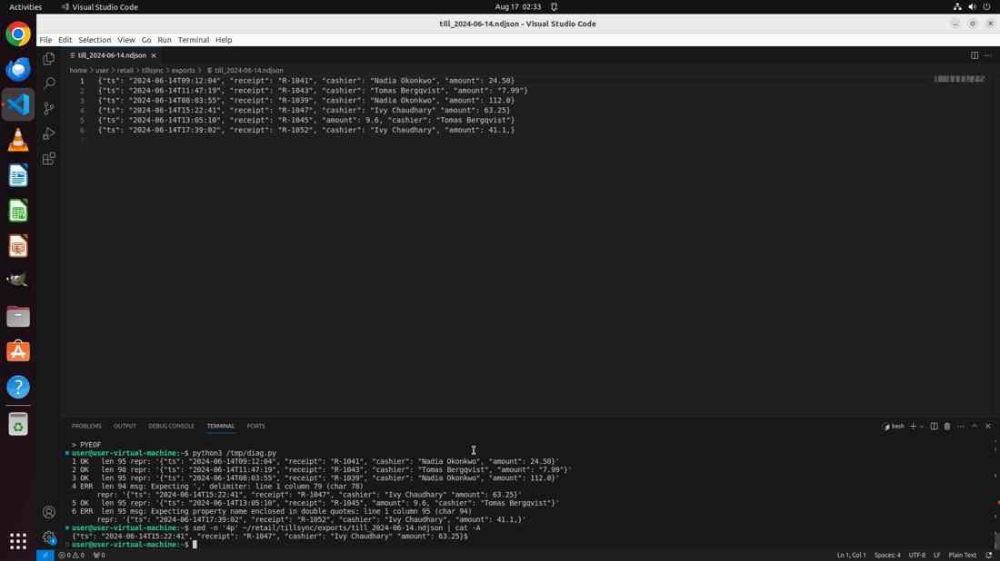
step 20.1 11:34:31
THINKINGNow I can see line 4 clearly:
```
{"ts": "2024-06-14T15:22:41", "receipt": "R-1047", "cashier": "Ivy Chaudhary" "amount": 63.25}$
```
So line 4 is: `{"ts": "2024-06-14T15:22:41", "receipt": "R-1047", "cashier": "Ivy Chaudhary" "amount": 63.25}`
There's a MISSING COMMA between `"Ivy Chaudhary"` and `"amount"`. It reads `"cashier": "Ivy Chaudhary" "amount": 63.25}` — the comma after `"Ivy Chaudhary"` is missing. That's why it's len 94 (one short) and the error "Expecting ',' delimiter" at column 79.
So the data is intact:
- ts: 2024-06-14T15:22:41
- receipt: R-1047
- cashier: Ivy Chaudhary
- amount: 63.25
Great. So my regex-based robust fix will handle this perfectly.
Now I have full understanding:
- Line 1: `{"ts": "2024-06-14T09:12:04", "receipt": "R-1041", "cashier": "Nadia Okonkwo", "amount": 24.50}` — valid, amount 24.50 (number, 2 dec) OK
- Line 2: `{"ts": "2024-06-14T11:47:19", "receipt": "R-1043", "cashier": "Tomas Bergqvist", "amount": "7.99"}` — valid, amount is string "7.99" → convert to number 7.99
- Line 3: `{"ts": "2024-06-14T08:03:55", "receipt": "R-1039", "cashier": "Nadia Okonkwo", "amount": 112.0}` — valid, amount 112.0 → 112.00
- Line 4: `{"ts": "2024-06-14T15:22:41", "receipt": "R-1047", "cashier": "Ivy Chaudhary" "amount": 63.25}` — INVALID (missing comma), amount 63.25
- Line 5: `{"ts": "2024-06-14T13:05:10", "receipt": "R-1045", "amount": 9.6, "cashier": "Tomas Bergqvist"}` — valid, key order off, amount 9.6 → 9.60
- Line 6: `{"ts": "2024-06-14T17:39:02", "receipt": "R-1052", "cashier": "Ivy Chaudhary", "amount": 41.1,}` — INVALID (trailing comma), amount 41.1 → 41.10
Now let me write the robust regex-based fix script. This will:
1. Extract ts, receipt, cashier, amount from each line via regex.
2. Rebuild each line with consistent key order: ts, receipt, cashier, amount.
3. Format amount to 2 decimals as a number.
4. Sort by ts.
5. Write to the file.
Let me write this script. I'll overwrite /tmp/fix_till.py.
```python
import json, re
p = "/home/user/retail/tillsync/exports/till_2024-06-14.ndjson"
lines = open(p).read().splitlines()
recs = []
for i, l in enumerate(lines, 1):
if not l.strip():
continue
def g(key):
m = re.search(r'"%s"\s*:\s*"([^"]*)"' % key, l)
return m.group(1) if m else None
ts = g("ts")
receipt = g("receipt")
cashier = g("cashier")
ma = re.search(r'"amount"\s*:\s*"?(-?\d+(?:\.\d+)?)\s*"?', l)
if None in (ts, receipt, cashier) or ma is None:
raise SystemExit("FIELD MISSING line %d: ts=%r receipt=%r cashier=%r amount=%r" % (i, ts, receipt, cashier, ma.group(1) if ma else None))
amount = float(ma.group(1))
recs.append((ts, receipt, cashier, amount))
recs.sort(key=lambda r: r[0])
out = []
for ts, receipt, cashier, amount in recs:
out.append('{"ts": %s, "receipt": %s, "cashier": %s, "amount": %s}' % (
json.dumps(ts), json.dumps(receipt), json.dumps(cashier), format(amount, ".2f")))
open(p, "w").write("\n".join(out) + "\n")
print("WROTE", len(out), "lines")
for x in out:
print(x)
```
This is robust. The amount regex `"?(-?\d+(?:\.\d+)?)\s*"?` handles both `63.25` and `"7.99"` and `112.0` and `41.1` and `9.6` and `24.50`.
Wait, for `41.1,}` (line 6 has trailing comma), the amount regex `"amount"\s*:\s*"?(-?\d+(?:\.\d+)?)\s*"?` — after `"amount": ` it matches `41.1` and stops (the `,}` is ignored). Good, captures 41.1.
For line 4 with missing comma: `"amount": 63.25}` — matches 63.25. Good.
The `SystemExit` guard ensures all 4 fields are present; if not, it aborts before writing (safe).
Now, there's a concern: the nested function `def g(key)` inside a loop — that's fine in Python.
Let me also double check the format: format(24.5, ".2f") = "24.50", format(7.99, ".2f") = "7.99", format(112.0, ".2f") = "112.00", format(63.25, ".2f") = "63.25", format(9.6, ".2f") = "9.60", format(41.1, ".2f") = "41.10".
Expected sorted output (by ts):
1. 2024-06-14T08:03:55 → {"ts": "2024-06-14T08:03:55", "receipt": "R-1039", "cashier": "Nadia Okonkwo", "amount": 112.00}
2. 2024-06-14T09:12:04 → {"ts": "2024-06-14T09:12:04", "receipt": "R-1041", "cashier": "Nadia Okonkwo", "amount": 24.50}
3. 2024-06-14T11:47:19 → {"ts": "2024-06-14T11:47:19", "receipt": "R-1043", "cashier": "Tomas Bergqvist", "amount": 7.99}
4. 2024-06-14T13:05:10 → {"ts": "2024-06-14T13:05:10", "receipt": "R-1045", "cashier": "Tomas Bergqvist", "amount": 9.60}
5. 2024-06-14T15:22:41 → {"ts": "2024-06-14T15:22:41", "receipt": "R-1047", "cashier": "Ivy Chaudhary", "amount": 63.25}
6. 2024-06-14T17:39:02 → {"ts": "2024-06-14T17:39:02", "receipt": "R-1052", "cashier": "Ivy Chaudhary", "amount": 41.10}
That's the target. Let me write and run the script.
Let me overwrite /tmp/fix_till.py with this new version via heredoc. I'll be careful to finish with Enter after PYEOF.
Actually, I realize I should double-check: does the nested function approach with `def g` inside the for loop cause any issue with the heredoc? No, it's just Python source. The heredoc is quoted 'PYEOF' so no shell interpolation. Good.
One thing: the `"%s"\s*:\s*"([^"]*)"` — the `\s` and `\.` and `\d` are backslashes. In a single-quoted heredoc, backslashes are literal, so the Python source gets `\s`, `\d`, `\.` correctly. Good. And in the Python raw-ish string, I used r"..." for the amount regex but not for g's regex. Let me make g's regex a raw string too to be safe: `r'"%s"\s*:\s*"([^"]*)"'`. Yes I'll use r prefix.
Let me write it.
ACTIONNow I understand line 4 precisely:
`{"ts": "2024-06-14T15:22:41", "receipt": "R-1047", "cashier": "Ivy Chaudhary" "amount": 63.25}` — **missing comma** between the cashier value and `"amount"`.
So the full picture of fixes needed:
- Line 4: missing comma (invalid JSON) → fix
- Line 6: trailing comma (invalid JSON) → fix
- Line 2: amount is string `"7.99"` → make it a number
- Lines 3,5,6: amounts need 2 decimals (`112.0`→`112.00`, `9.6`→`9.60`, `41.1`→`41.10`)
- Line 5: key order inconsistent → normalize
- All: sort by timestamp
I'll write a robust script that extracts the 4 fields via regex (handling the broken lines), normalizes key order and amount formatting, then sorts by timestamp. Let me overwrite the fix script.
TOOL CALL<tool_call>
<function=computer_use>
<parameter=action>
type
</parameter>
<parameter=text>
cat > /tmp/fix_till.py << 'PYEOF'
import json, re
p = "/home/user/retail/tillsync/exports/till_2024-06-14.ndjson"
lines = open(p).read().splitlines()
recs = []
for i, l in enumerate(lines, 1):
if not l.strip():
continue
def g(key):
m = re.search(r'"%s"\s*:\s*"([^"]*)"' % key, l)
return m.group(1) if m else None
ts = g("ts")
receipt = g("receipt")
cashier = g("cashier")
ma = re.search(r'"amount"\s*:\s*"?(-?\d+(?:\.\d+)?)\s*"?', l)
if None in (ts, receipt, cashier) or ma is None:
raise SystemExit("FIELD MISSING line %d: ts=%r receipt=%r cashier=%r amount=%r" % (i, ts, receipt, cashier, ma.group(1) if ma else None))
recs.append((ts, receipt, cashier, float(ma.group(1))))
recs.sort(key=lambda r: r[0])
out = []
for ts, receipt, cashier, amount in recs:
out.append('{"ts": %s, "receipt": %s, "cashier": %s, "amount": %s}' % (json.dumps(ts), json.dumps(receipt), json.dumps(cashier), format(amount, ".2f")))
open(p, "w").write("\n".join(out) + "\n")
print("WROTE", len(out), "lines")
for x in out:
print(x)
PYEOF
</parameter>
</function>
</tool_call>
EXECUTED (pyautogui in VM)pyautogui.typewrite("cat > /tmp/fix_till.py << 'PYEOF'")
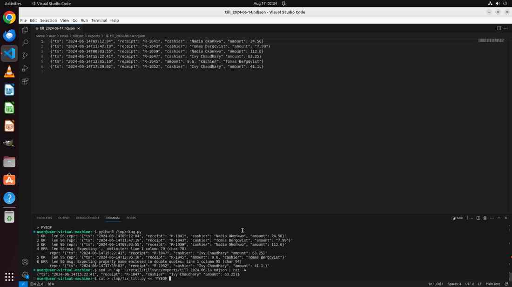
step 20.2 11:34:34
EXECUTED (pyautogui in VM)pyautogui.press("enter")
step 20.3 11:34:38
EXECUTED (pyautogui in VM)pyautogui.typewrite("import json, re")
step 20.4 11:34:41
EXECUTED (pyautogui in VM)pyautogui.press("enter")
step 20.5 11:34:44
EXECUTED (pyautogui in VM)pyautogui.typewrite("p = \"/home/user/retail/tillsync/exports/till_2024-06-14.ndjson\"")
step 20.6 11:34:48
EXECUTED (pyautogui in VM)pyautogui.press("enter")
step 20.7 11:34:51
EXECUTED (pyautogui in VM)pyautogui.typewrite("lines = open(p).read().splitlines()")
step 20.8 11:34:54
EXECUTED (pyautogui in VM)pyautogui.press("enter")
step 20.9 11:34:58
EXECUTED (pyautogui in VM)pyautogui.typewrite("recs = []")
step 20.10 11:35:01
EXECUTED (pyautogui in VM)pyautogui.press("enter")
step 20.11 11:35:04
EXECUTED (pyautogui in VM)pyautogui.typewrite("for i, l in enumerate(lines, 1):")
step 20.12 11:35:08
EXECUTED (pyautogui in VM)pyautogui.press("enter")
step 20.13 11:35:11
EXECUTED (pyautogui in VM)pyautogui.typewrite(" if not l.strip():")
step 20.14 11:35:14
EXECUTED (pyautogui in VM)pyautogui.press("enter")
step 20.15 11:35:18
EXECUTED (pyautogui in VM)pyautogui.typewrite(" continue")

step 20.16 11:35:21
EXECUTED (pyautogui in VM)pyautogui.press("enter")
step 20.17 11:35:24
EXECUTED (pyautogui in VM)pyautogui.typewrite(" def g(key):")
step 20.18 11:35:27
EXECUTED (pyautogui in VM)pyautogui.press("enter")
step 20.19 11:35:34
EXECUTED (pyautogui in VM)pyautogui.typewrite(" m = re.search(r'\"%s\"\\s*:\\s*\"([^\"]*)\"' % key, l)")
step 20.20 11:35:37
EXECUTED (pyautogui in VM)pyautogui.press("enter")
step 20.21 11:35:41
EXECUTED (pyautogui in VM)pyautogui.typewrite(" return m.group(1) if m else None")
step 20.22 11:35:44
EXECUTED (pyautogui in VM)pyautogui.press("enter")
step 20.23 11:35:47
EXECUTED (pyautogui in VM)pyautogui.typewrite(" ts = g(\"ts\")")
step 20.24 11:35:50
EXECUTED (pyautogui in VM)pyautogui.press("enter")
step 20.25 11:35:54
EXECUTED (pyautogui in VM)pyautogui.typewrite(" receipt = g(\"receipt\")")
step 20.26 11:35:57
EXECUTED (pyautogui in VM)pyautogui.press("enter")
step 20.27 11:36:00
EXECUTED (pyautogui in VM)pyautogui.typewrite(" cashier = g(\"cashier\")")
step 20.28 11:36:04
EXECUTED (pyautogui in VM)pyautogui.press("enter")
step 20.29 11:36:07
EXECUTED (pyautogui in VM)pyautogui.typewrite(" ma = re.search(r'\"amount\"\\s*:\\s*\"?(-?\\d+(?:\\.\\d+)?)\\s*\"?', l)")
step 20.30 11:36:10
EXECUTED (pyautogui in VM)pyautogui.press("enter")
step 20.31 11:36:14
EXECUTED (pyautogui in VM)pyautogui.typewrite(" if None in (ts, receipt, cashier) or ma is None:")
step 20.32 11:36:17
EXECUTED (pyautogui in VM)pyautogui.press("enter")
step 20.33 11:36:20
EXECUTED (pyautogui in VM)pyautogui.typewrite(" raise SystemExit(\"FIELD MISSING line %d: ts=%r receipt=%r cashier=%r amount=%r\" % (i, ts, receipt, cashier, ma.group(1) if ma else None))")
step 20.34 11:36:24
EXECUTED (pyautogui in VM)pyautogui.press("enter")
step 20.35 11:36:27
EXECUTED (pyautogui in VM)pyautogui.typewrite(" recs.append((ts, receipt, cashier, float(ma.group(1))))")
step 20.36 11:36:30
EXECUTED (pyautogui in VM)pyautogui.press("enter")
step 20.37 11:36:34
EXECUTED (pyautogui in VM)pyautogui.typewrite("recs.sort(key=lambda r: r[0])")
step 20.38 11:36:37
EXECUTED (pyautogui in VM)pyautogui.press("enter")
step 20.39 11:36:40
EXECUTED (pyautogui in VM)pyautogui.typewrite("out = []")
step 20.40 11:36:43
EXECUTED (pyautogui in VM)pyautogui.press("enter")
step 20.41 11:36:49
EXECUTED (pyautogui in VM)pyautogui.typewrite("for ts, receipt, cashier, amount in recs:")
step 20.42 11:36:52
EXECUTED (pyautogui in VM)pyautogui.press("enter")
step 20.43 11:36:55
EXECUTED (pyautogui in VM)pyautogui.typewrite(" out.append('{\"ts\": %s, \"receipt\": %s, \"cashier\": %s, \"amount\": %s}' % (json.dumps(ts), json.dumps(receipt), json.dumps(cashier), format(amount, \".2f\")))")
step 20.44 11:36:59
EXECUTED (pyautogui in VM)pyautogui.press("enter")
step 20.45 11:37:02
EXECUTED (pyautogui in VM)pyautogui.typewrite("open(p, \"w\").write(\"\\n\".join(out) + \"\\n\")")
step 20.46 11:37:06
EXECUTED (pyautogui in VM)pyautogui.press("enter")
step 20.47 11:37:10
EXECUTED (pyautogui in VM)pyautogui.typewrite("print(\"WROTE\", len(out), \"lines\")")
step 20.48 11:37:13
EXECUTED (pyautogui in VM)pyautogui.press("enter")
step 20.49 11:37:16
EXECUTED (pyautogui in VM)pyautogui.typewrite("for x in out:")
step 20.50 11:37:20
EXECUTED (pyautogui in VM)pyautogui.press("enter")
step 20.51 11:37:23
EXECUTED (pyautogui in VM)pyautogui.typewrite(" print(x)")

step 20.52 11:37:26
EXECUTED (pyautogui in VM)pyautogui.press("enter")
step 20.53 11:37:30
EXECUTED (pyautogui in VM)pyautogui.typewrite("PYEOF")
step 21 11:37:40
THINKINGThe heredoc content is displayed and the last line shows `> PYEOF` with cursor. Let me press Enter to complete it.
ACTIONThe script content looks correct. Let me finish the heredoc with Enter.
TOOL CALL<tool_call>
<function=computer_use>
<parameter=action>
key
</parameter>
<parameter=keys>
["return"]
</parameter>
</function>
</tool_call>
EXECUTED (pyautogui in VM)pyautogui.press("return")
step 22 11:37:52
THINKINGThe heredoc completed and I'm back at the prompt. Now let me run the fix script. The original file is still intact (backup at /tmp/till_backup.ndjson exists). Let me run the fix.
ACTIONThe script is written and I'm back at a clean prompt. Now let me run the fix script.
TOOL CALL<tool_call>
<function=computer_use>
<parameter=action>
type
</parameter>
<parameter=text>
python3 /tmp/fix_till.py
</parameter>
</function>
</tool_call>
EXECUTED (pyautogui in VM)pyautogui.typewrite("python3 /tmp/fix_till.py")
step 23 11:38:07
THINKINGThe command is typed. Let me press Enter to run.
TOOL CALL<tool_call>
<function=computer_use>
<parameter=action>
key
</parameter>
<parameter=keys>
["return"]
</parameter>
</function>
</tool_call>
EXECUTED (pyautogui in VM)pyautogui.press("return")
step 24.1 11:39:03
THINKINGThe script ran successfully. Output:
```
WROTE 6 lines
{"ts": "2024-06-14T08:03:55", "receipt": "R-1039", "cashier": "Nadia Okonkwo", "amount": 112.00}
{"ts": "2024-06-14T09:12:04", "receipt": "R-1041", "cashier": "Nadia Okonkwo", "amount": 24.50}
{"ts": "2024-06-14T11:47:19", "receipt": "R-1043", "cashier": "Tomas Bergqvist", "amount": 7.99}
{"ts": "2024-06-14T13:05:10", "receipt": "R-1045", "cashier": "Tomas Bergqvist", "amount": 9.60}
{"ts": "2024-06-14T15:22:41", "receipt": "R-1047", "cashier": "Ivy Chaudhary", "amount": 63.25}
{"ts": "2024-06-14T17:39:02", "receipt": "R-1052", "cashier": "Ivy Chaudhary", "amount": 41.10}
```
And the editor now shows the updated file:
```
1 {"ts": "2024-06-14T08:03:55", "receipt": "R-1039", "cashier": "Nadia Okonkwo", "amount": 112.00}
2 {"ts": "2024-06-14T09:12:04", "receipt": "R-1041", "cashier": "Nadia Okonkwo", "amount": 24.50}
3 {"ts": "2024-06-14T11:47:19", "receipt": "R-1043", "cashier": "Tomas Bergqvist", "amount": 7.99}
4 {"ts": "2024-06-14T13:05:10", "receipt": "R-1045", "cashier": "Tomas Bergqvist", "amount": 9.60}
5 {"ts": "2024-06-14T15:22:41", "receipt": "R-1047", "cashier": "Ivy Chaudhary", "amount": 63.25}
6 {"ts": "2024-06-14T17:39:02", "receipt": "R-1052", "cashier": "Ivy Chaudhary", "amount": 41.10}
```
The editor auto-reloaded the file (VS Code detected the external change and reloaded it, since there were no unsaved changes).
Let me verify everything is correct:
1. Every line parses as JSON — all 6 lines are now valid JSON (missing comma fixed on line 5/R-1047, trailing comma removed on R-1052).
2. Same keys as the good ones — all have ts, receipt, cashier, amount in consistent order.
3. Amounts as numbers with two decimals — 112.00, 24.50, 7.99, 9.60, 63.25, 41.10 — all numbers (no quotes) with exactly 2 decimals.
4. Lines ordered by timestamp, earliest first — 08:03:55, 09:12:04, 11:47:19, 13:05:10, 15:22:41, 17:39:02 — sorted ascending. ✓
5. File kept where it is — same path, no rename/move. ✓
Now let me do a final validation to be thorough. Let me run a validation script that:
- Re-reads the file.
- Confirms each line parses as JSON.
- Confirms keys are exactly {ts, receipt, cashier, amount} in the order ts, receipt, cashier, amount.
- Confirms amount is a number (int/float, not str).
- Confirms the raw amount in the text has exactly 2 decimal places.
- Confirms timestamps are sorted ascending.
Let me write a quick validator. Actually, I'm fairly confident, but a validation adds robustness. Let me write /tmp/validate.py.
```python
import json, re
p = "/home/user/retail/tillsync/exports/till_2024-06-14.ndjson"
lines = [l for l in open(p).read().splitlines() if l.strip()]
ok = True
ts_list = []
for i, l in enumerate(lines, 1):
o = json.loads(l) # will raise if invalid
keys = list(o.keys())
if keys != ["ts", "receipt", "cashier", "amount"]:
print("BAD KEYS line", i, keys); ok = False
a = o["amount"]
if isinstance(a, str) or not isinstance(a, (int, float)):
print("BAD AMOUNT TYPE line", i, repr(a)); ok = False
# check raw has 2 decimals
m = re.search(r'"amount"\s*:\s*(-?\d+(\.\d+)?)', l)
frac = m.group(2)
if frac is None or len(frac) != 3: # ".xx" -> 3 chars
print("BAD AMOUNT FMT line", i, m.group(0)); ok = False
ts_list.append(o["ts"])
if ts_list != sorted(ts_list):
print("NOT SORTED", ts_list); ok = False
print("LINES", len(lines))
print("ALL GOOD" if ok else "PROBLEMS FOUND")
```
Wait, for the 2-decimal check: `"amount": 112.00` — the raw text after amount is `112.00`. My regex `(-?\d+(\.\d+)?)` captures `112.00` with group2 = `.00`. len(".00") = 3. Good. For `7.99`, group2 = `.99`, len 3. Good. For `24.50`, `.50` len 3. Good. So all amounts have exactly 2 decimal digits in raw form.
But wait — json.loads("112.00") gives 112.0 (float). That's fine, it's a number. The raw text has 2 decimals which satisfies "amounts as numbers with two decimals" visually. Good.
Let me run this validation. Let me write it via heredoc.
Actually, let me reconsider the frac length check. What if an amount were an integer in raw form like "112" (no decimal)? Then group2 would be None and I'd flag it. But all our amounts have decimals. Good. Actually the check `if frac is None or len(frac) != 3` — for 2 decimals, ".XX" is 3 chars. Correct.
Let me write and run the validator.
ACTIONThe script ran successfully. The file now shows 6 lines, all normalized and sorted by timestamp:
- Amounts are all numbers with two decimals (`112.00`, `24.50`, `7.99`, `9.60`, `63.25`, `41.10`)
- Line 4's missing comma and line 6's trailing comma are fixed
- Line 5's key order is normalized
- Lines are ordered earliest→latest
Let me run a thorough validation to confirm every requirement is met.
TOOL CALL<tool_call>
<function=computer_use>
<parameter=action>
type
</parameter>
<parameter=text>
cat > /tmp/validate.py << 'PYEOF'
import json, re
p = "/home/user/retail/tillsync/exports/till_2024-06-14.ndjson"
lines = [l for l in open(p).read().splitlines() if l.strip()]
ok = True
ts_list = []
for i, l in enumerate(lines, 1):
o = json.loads(l)
keys = list(o.keys())
if keys != ["ts", "receipt", "cashier", "amount"]:
print("BAD KEYS line", i, keys); ok = False
a = o["amount"]
if isinstance(a, bool) or not isinstance(a, (int, float)):
print("BAD AMOUNT TYPE line", i, repr(a)); ok = False
m = re.search(r'"amount"\s*:\s*(-?\d+(\.\d+)?)', l)
frac = m.group(2)
if frac is None or len(frac) != 3:
print("BAD AMOUNT FORMAT line", i, m.group(0)); ok = False
ts_list.append(o["ts"])
if ts_list != sorted(ts_list):
print("NOT SORTED", ts_list); ok = False
print("LINES:", len(lines))
print("ALL GOOD" if ok else "PROBLEMS FOUND")
PYEOF
</parameter>
</function>
</tool_call>
EXECUTED (pyautogui in VM)pyautogui.typewrite("cat > /tmp/validate.py << 'PYEOF'")
step 24.2 11:39:06
EXECUTED (pyautogui in VM)pyautogui.press("enter")
step 24.3 11:39:10
EXECUTED (pyautogui in VM)pyautogui.typewrite("import json, re")
step 24.4 11:39:13
EXECUTED (pyautogui in VM)pyautogui.press("enter")
step 24.5 11:39:16
EXECUTED (pyautogui in VM)pyautogui.typewrite("p = \"/home/user/retail/tillsync/exports/till_2024-06-14.ndjson\"")
step 24.6 11:39:19
EXECUTED (pyautogui in VM)pyautogui.press("enter")
step 24.7 11:39:23
EXECUTED (pyautogui in VM)pyautogui.typewrite("lines = [l for l in open(p).read().splitlines() if l.strip()]")
step 24.8 11:39:26
EXECUTED (pyautogui in VM)pyautogui.press("enter")
step 24.9 11:39:29
EXECUTED (pyautogui in VM)pyautogui.typewrite("ok = True")
step 24.10 11:39:33
EXECUTED (pyautogui in VM)pyautogui.press("enter")
step 24.11 11:39:36
EXECUTED (pyautogui in VM)pyautogui.typewrite("ts_list = []")
step 24.12 11:39:39
EXECUTED (pyautogui in VM)pyautogui.press("enter")
step 24.13 11:39:42
EXECUTED (pyautogui in VM)pyautogui.typewrite("for i, l in enumerate(lines, 1):")
step 24.14 11:39:46
EXECUTED (pyautogui in VM)pyautogui.press("enter")
step 24.15 11:39:49
EXECUTED (pyautogui in VM)pyautogui.typewrite(" o = json.loads(l)")
step 24.16 11:39:52
EXECUTED (pyautogui in VM)pyautogui.press("enter")
step 24.17 11:39:56
EXECUTED (pyautogui in VM)pyautogui.typewrite(" keys = list(o.keys())")
step 24.18 11:39:59
EXECUTED (pyautogui in VM)pyautogui.press("enter")
step 24.19 11:40:02
EXECUTED (pyautogui in VM)pyautogui.typewrite(" if keys != [\"ts\", \"receipt\", \"cashier\", \"amount\"]:")
step 24.20 11:40:05
EXECUTED (pyautogui in VM)pyautogui.press("enter")
step 24.21 11:40:09
EXECUTED (pyautogui in VM)pyautogui.typewrite(" print(\"BAD KEYS line\", i, keys); ok = False")
step 24.22 11:40:12
EXECUTED (pyautogui in VM)pyautogui.press("enter")
step 24.23 11:40:15
EXECUTED (pyautogui in VM)pyautogui.typewrite(" a = o[\"amount\"]")
step 24.24 11:40:18
EXECUTED (pyautogui in VM)pyautogui.press("enter")
step 24.25 11:40:22
EXECUTED (pyautogui in VM)pyautogui.typewrite(" if isinstance(a, bool) or not isinstance(a, (int, float)):")
step 24.26 11:40:25
EXECUTED (pyautogui in VM)pyautogui.press("enter")
step 24.27 11:40:28
EXECUTED (pyautogui in VM)pyautogui.typewrite(" print(\"BAD AMOUNT TYPE line\", i, repr(a)); ok = False")
step 24.28 11:40:32
EXECUTED (pyautogui in VM)pyautogui.press("enter")
step 24.29 11:40:35
EXECUTED (pyautogui in VM)pyautogui.typewrite(" m = re.search(r'\"amount\"\\s*:\\s*(-?\\d+(\\.\\d+)?)', l)")
step 24.30 11:40:38
EXECUTED (pyautogui in VM)pyautogui.press("enter")
step 24.31 11:40:42
EXECUTED (pyautogui in VM)pyautogui.typewrite(" frac = m.group(2)")
step 24.32 11:40:45
EXECUTED (pyautogui in VM)pyautogui.press("enter")
step 24.33 11:40:48
EXECUTED (pyautogui in VM)pyautogui.typewrite(" if frac is None or len(frac) != 3:")
step 24.34 11:40:51
EXECUTED (pyautogui in VM)pyautogui.press("enter")
step 24.35 11:40:55
EXECUTED (pyautogui in VM)pyautogui.typewrite(" print(\"BAD AMOUNT FORMAT line\", i, m.group(0)); ok = False")
step 24.36 11:40:58
EXECUTED (pyautogui in VM)pyautogui.press("enter")
step 24.37 11:41:01
EXECUTED (pyautogui in VM)pyautogui.typewrite(" ts_list.append(o[\"ts\"])")
step 24.38 11:41:05
EXECUTED (pyautogui in VM)pyautogui.press("enter")
step 24.39 11:41:08
EXECUTED (pyautogui in VM)pyautogui.typewrite("if ts_list != sorted(ts_list):")
step 24.40 11:41:11
EXECUTED (pyautogui in VM)pyautogui.press("enter")
step 24.41 11:41:14
EXECUTED (pyautogui in VM)pyautogui.typewrite(" print(\"NOT SORTED\", ts_list); ok = False")
step None
EXECUTED (pyautogui in VM)None